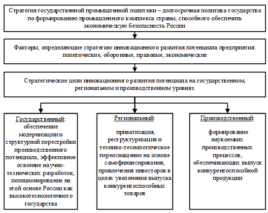

ТИМИРГАЛЕЕВА Р.Р. ГРИШИН И.Ю.
МОДЕЛИРОВАНИЕ ПРОЦЕССОВ ИННОВАЦИОННОГО РАЗВИТИЯ БАЛЬНЕОЛОГИЧЕСКИХ КУРОРТНЫХ ТЕРРИТОРИЙ РЕГИОНОВ ЮГА РОССИИ
Монография
Авторы:
Тимиргалеева Рена Ринатовна – доктор экономических наук, профессор, профессор кафедры производственного менеджмента и экономики отраслей народного хозяйства Федерального государственного бюджетного образовательного учреждения высшего профессионального образования «Кубанский государственный технологический университет»
Гришин Игорь Юрьевич – доктор технических наук, профессор, профессор кафедры компьютерных технологий и информационной безопасности Федерального государственного бюджетного образовательного учреждения высшего профессионального образования «Кубанский государственный технологический университет»
В монографии рассматриваются новые подходы к управлению развитием социально-экономических систем разного уровня. Даны теоретические аспекты моделирования социально-экономических систем и процессов их развития, математические основы анализа их качества и эффективности, раскрыты вопросы методологии управления их устойчивым развитием, исследованы подходы к адаптивному управлению социально-экономическими системами разного уровня, детально представлены математические основы моделирования и управления их устойчивым развитием. Отдельное внимание уделено исследованию процесса управления развивающимися социально-экономическими системами реального сектора экономики.
Издание предназначено для научных работников, работников органов муниципального и государственного управления, занимающихся проблемами управления развитием социально-экономических систем разного уровня, а также для аспирантов и студентов соответствующих направлений подготовки.
СОДЕРЖАНИЕ
ВВЕДЕНИЕ
В условиях динамичной, чрезвычайно быстро меняющейся среды важно уметь предвидеть направления развития, с одной стороны, наиболее существенных экономических и социальных явлений, и, с другой стороны, социально-экономических систем разного уровня. Для решения такой задачи необходимо, прежде всего, иметь их грамотное и адекватное описание. В настоящее время достаточно широкое распространение получили математические модели самого разного назначения, позволяющие описывать взаимодействие разных субъектов рынка.
Отражая основные закономерности описываемого явления, такие модели позволяют не только предсказывать его динамику, но и рассчитывать последствия различных управляющих воздействий, что, по сути дела, и является основной задачей моделирования социально-экономических систем и процессов их развития.
Применяя термин «социально-экономическая система» для целей настоящего исследования, авторы имеют в виду совокупность и взаимодействие основных социальных и экономических институтов. Подразумевается, что указанная совокупность находится в динамике, а, следовательно, ее неотъемлемой частью являются также движущие ею интересы и наиболее существенные ожидания.
Особое место в исследовании занимает понятие «управление социально-экономической системой», которое в широком понимании представляет собой функцию некоторой системы более высокого уровня, направленной либо на сохранение основного качества конкретной социально-экономической системы, либо на выполнение программы, обеспечивающей устойчивость ее функционирования и достижения ею заданной цели, либо на развитие данной социально-экономической системы. В результате анализа процессов управления в разных сферах выявлены их общие закономерности, что позволило установить общую теоретическую основу моделирования процессов их развития.
Управление в социально-экономических системах отличается от традиционного представления об управлении. Это связано с тем, что социально-экономические системы по своей природе являются сложными и многоуровневыми, а, следовательно, они слабопредсказуемы. В такой ситуации определить, как желаемое, так и практически достижимое состояние данной системы достаточно сложно, тем более сложно выбрать и навязать такой системе «оптимальный» путь перехода из одного состояния в другое. Эти вопросы решаются с помощью моделирования.
ГЛАВА 1
БАЛЬНЕОЛОГИЧЕСКИЕ КУРОРТНЫЕ ТЕРРИТОРИИ КАК ОБЪЕКТЫ МОДЕЛИРОВАНИЯ ПРОЦЕССОВ ИХ ИННОВАЦИОННОГО РАЗВИТИЯ
1.1 Оценка инновационного потенциала бальнеологической курортной территории
Современная рыночная экономика характеризуется динамичностью и нестабильностью процессов, которые происходят на рынке, что связано с постоянным изменением направления развития. В таких условиях субъекты хозяйствования должны постоянно адаптироваться к таким изменениям. Одним из эффективных методов адаптации, методом, который позволяет динамично приводить в соответствие внутренние возможности развития и внешние факторы влияния, являются инновации, которые еще к тому же являются и генерирующей рыночной средой.
Мировые тенденции экономического развития наглядно проиллюстрировали, что именно инновационный путь развития является наиболее перспективным не только для отдельных субъектов хозяйствования, но и для региональной экономики. Это требует создания системы оперативного поиска, анализа и выбора вариантов инновационного развития, приемлемых с точки зрения внешних и внутренних условий хозяйствования. А для этого необходимо, прежде всего, определить инновационный потенциал каждого конкретного региона и возможности реализации вариантов его инновационного развития.
Современная теория инноваций оперирует разными экономическими приемами, моделями, алгоритмами и методами при планировании и организации хозяйственной деятельности субъектов хозяйствования. Однако в практической деятельности применяется лишь некоторая часть передового экономического инструментария. При решении этой проблемы в развитых странах ориентируются, как правило, на концепцию альтернативного отбора проектов, базирующихся на взаимной увязке научных и технических знаний с потребностями потребителя научно-технической продукции. При этом важную роль играет такое ключевое понятие современной экономики как инновационный потенциал, под которым будем понимать совокупность средств и возможностей региона в реализации своей инновационной деятельности.
Рассмотрение инновационного потенциала и его составных обусловлено потребностью разработки механизма оценки возможности применения современных экономических подходов в практической деятельности субъектов хозяйствования. Многочисленная оперативная оценка инновационного потенциала региона позволит увеличить отдачу от более обоснованного применения современного экономического инструментария.
Предлагаем ввести в научный оборот такую экономическую категорию как «инновационный потенциал бальнеологической курортной территории» и наполнить ее конкретным функциональным содержанием для возможного практического использования. Итак, под инновационным потенциалом бальнеологической курортной территории предлагаем понимать некоторую критическую массу рекреационных ресурсов, необходимых и достаточных для его развития на основе постоянного поиска и использования новых сфер и способов реализации рыночных возможностей. По нашему мнению инновационный потенциал бальнеологической курортной территории включает ряд составляющих: рыночный, технологический, кадровый, интерфейсный, интеллектуальный, информационный, научно-исследовательский.
Что касается рыночного потенциала, то он характеризует степень соответствия внутренних возможностей развития региона внешним, которые генерируются рыночной средой. Интеллектуальная составляющая определяет возможности генерации и восприятия идей и замыслов новаций и доведения их до уровня новых технологий, конструкций, организационных и управленческих решений.
Кадровый потенциал характеризует способность персонала применять новые технологии, реализовывать новые организационные и управленческие решения, инициировать новации. В пределах бальнеологической курортной территории эти вопросы должны находиться в компетенции территориальных органов управления (центры занятости, подготовки и переподготовки кадров и т.д.). Технологический потенциал отражает способность оперативно реагировать на технологические изменения.
Информационный потенциал характеризует информационную обеспеченность субъекта хозяйствования, степень полноты, точности, релевантности и противоречивости информации, необходимой для принятия эффективных инновационных решений. Интерфейсный потенциал характеризует возможность приведения в соответствие разносторонних интересов субъектов инновационного процесса в ходе реализации проектов инновационного развития бальнеологической курортной территории.
Научно-исследовательский потенциал характеризует наличие запаса результатов научно-исследовательских работ, достаточного для генерации новых знаний, способность проводить исследования с целью проверки инновационных идей и возможности использования новаций для развития бальнеологической курортной территории.
Такая детализация позволяет построить иерархию инновационного потенциала бальнеологической курортной территории, четко определить и проанализировать ее инновационный потенциал. В качестве первого возможного приближения выявленные функции можно представить в виде составных с обоснованными экспертным путем весовыми коэффициентами: Пj=∑kіПіj, где Пj - потенциал, который оценивается; kі - весовой коэффициент і-ой составляющей потенциала; Піj - і-тая составляющая j-го потенциала. Если для отдельных составных потенциала все разделы будут достаточно близкими, то их следует оценить близкими весовыми коэффициентами с учетом лишь некоторых управленческих решений.
Таким образом, если потенциал каждой составляющей оценить в процентах, принимая максимальное использование инноваций за 100%, то можно количественно оценить интегральный инновационный потенциал бальнеологической курортной территории.
Для количественной оценки уровня использования инновационного потенциала бальнеологической курортной территории необходимо провести соответствующее маркетинговое исследование, которое позволит обнаружить уровень использования инновационного потенциала по разным направлениям и интегральных потенциалов на разных уровнях. Применение инновационного потенциала бальнеологической курортной территории, как экономической категории, позволит количественно оценивать полноту внедрения инноваций, и будет оказывать содействие более обоснованному принятию управленческих решений в сфере инноваций.
Что касается непосредственно поиска, оценки и выбора вариантов инновационного развития конкретной бальнеологической курортной территории, то это одно из основных заданий, которое должно быть выполнено в процессе достижения целей длительного выживания и устойчивого развития в соответствии с выбранной миссией.
Оценку вариантов инновационного развития бальнеологической курортной территории предлагаем проводить с помощью SWOT- анализа. Поскольку каждая территория сталкивается с различным набором возможностей и угроз и каждая имеет свои сильные и слабые стороны, то и стратегия каждой бальнеологической курортной территории в результате будет уникальной. Таким образом, SWOT-матрица позволит, с одной стороны, выявить сильные и слабые стороны, возможности и угрозы, а, с другой стороны – исследовать перспективы развития бальнеологической курортной территории и разработать соответствующую инновационную стратегию ее развития.
Для принятия решений в ситуации постоянного изменения факторов внешней среды предлагаем использовать коэффициенты уверенности для оценки вероятного характера влияния характеристик внутренней и внешней среды хозяйствования (границы изменений – от –1 до +1), а также правила их комбинирования для расчета интегральной оценки влияния всего комплекса факторов. При этом со знаком «+» будем оценивать возможности развития внешней среды и сильные стороны бальнеологической курортной территории, со знаком «-» - угрозы, которые идут из внешней среды и слабые стороны территории.
Для дальнейшего рассмотрения следует принимать только варианты с положительной суммарной оценкой. При этом допускается, как минимум, Ко≥+0,6. Для удобства анализа шкала значений коэффициента уверенности может быть сведена в виде таблицы (табл.1), используя которую сделаем выбор вариантов инновационного развития бальнеологической курортной территории, приемлемых в данной конкретной ситуации.
Предлагаем анализ возможностей инновационного развития бальнеологической курортной территории проводить по следующей схеме: составляем SWOT-матрицу принятия решений; оцениваем варианты инновационного развития территории; формируем стратегию ее инновационного развития.
Таблица 1 - Таблица решений относительно возможности реализации вариантов инновационного развития бальнеологической курортной территории
Значение суммарного коэффициента уверенности |
Решение относительно возможности реализации варианта инновационного развития |
Ко = -1,0 |
Реализация невозможна. Условия отсутствуют |
-1,0 < Ко ≤ -0,8 |
Условия для реализации инноваций практически отсутствуют |
-0,8 < Ко ≤ -0,6 |
Условий для реализации инноваций почти нет |
-0,6 < Ко ≤ -0,3 |
Больше решений «за», чем «против» |
-0,3 < Ко ≤ +0,3 |
Ситуация неопределенности |
+0,3 < Ко ≤ +0,6 |
Возможности реализации незначительные |
+0,6 < Ко ≤ +0,8 |
Есть все условия для реализации инноваций |
+0,8 < Ко ≤ +0,1 |
Практически уверенно можно реализовать инновации |
Ко = +1,0 |
Все условия для реализации есть |
Необходимо, однако, отметить, что в зависимости от конкретной рыночной ситуации, от изменений, происходящих во внешней среде, одни и те же характеристики бальнеологической курортной территории и ее субъектов хозяйствования могут свидетельствовать как про сильные, так и про слабые их стороны. Поэтому с той или иной сложившейся на рынке ситуации и во внешней среде показатели сильных и слабых сторон бальнеологической курортной территории и ее субъектов хозяйствования необходимо регулярно пересматривать. При этом необходимо также учитывать, что весомость разных характеристик внутренней и внешней среды разная.
Предложенный подход позволяет уже на начальной стадии отказаться от неприемлемых вариантов решений. Методика оценки позволяет учесть природу характеристик внешней и внутренней среды с помощью коэффициентов уверенности, что позволяет принимать решения в условиях большей определенности и меньшего риска. Приведенная методика имеет вполне формализованный вид и может быть реализована на ЭВМ с использованием стандартных пакетов программ. Такой подход позволяет повысить оперативность и точность работ, дает принципиальную возможность расширения горизонта выбора за счет проведения оперативного анализа и оценки множества альтернативных вариантов инновационного развития бальнеологической курортной территории.
Список используемых источников
1.2 Кадровое планирование в формировании инновационной стратегии развития предприятий туристско-рекреационной сферы
Управление предприятием в условиях рыночной экономики невозможно без прогрессивного развития хозяйственной деятельности на всех уровнях: стратегическом, тактическом и оперативном. Самым важным является стратегический уровень как один из самых эффективных и прогрессивных способов управления предприятием, уровнем, на котором принимаются наиболее важные для дальнейшего развития управленческие решения.
В условиях растущих изменений во внешней и внутренней среде и связанных с этим неопределенностей современным инструментом управления инновационным развитием предприятий является стратегия [1; 2].
Представляют интерес для нашего исследования рассмотренные в работах [3; 4] теоретические и методологические основы стратегического менеджмента, где достаточно полно рассмотрен широкий спектр тем от анализа среды до реализации стратегий. Особенно важны эти факты для предприятий туристско-рекреационной сферы.
Стратегия должна обеспечивать устойчивый экономический рост и развитие предприятия, повышение конкурентоспособности предоставляемых предприятием туристско-рекреационных услуг. При этом следует учесть, что понятия «рост» и «развитие» хотя и являются взаимосвязанными, но по своему содержанию по многим позициям отличаются.
Так, авторы работы [5] рассматривают понятие «рост» как увеличение размеров предприятия и расширение объемов его производства (выпуск продукции, величины продаж, численность сотрудников и др.). Содержание понятия «развитие» определено данными авторами как качественное изменение и обновление хозяйственной системы, повышение эффективности ее функционирования на основе совершенствования техники, технологии и организации труда во всех структурных подразделениях и повышения качества продукции.
Обзор ряда научной литературы по обозначенной проблеме показал многовариантность авторских определений категории «развитие предприятия». Обобщение приведенных трактовок позволяет утверждать, что в реальной действительности экономическое значение данного понятия проявляется во взаимном проникновении и взаимном дополнении в едином процессе простого и расширенного воспроизводства.
Что касается сущности понятия «стратегия развития предприятия», то следует отметить, что его эволюция была связана с изменениями в практике стратегического управления. Поэтому важной научной задачей следует считать не только выявление и систематизацию основных содержательных характеристик понятия «стратегия развития предприятия», но и формирование современной обобщенной концепции, которая бы отвечала потребностям общества, которое развивается в условиях быстрых изменений.
Методологический базис науки стратегического управления был заложен еще в начале 80-х годов прошлого столетия. Однако после определения классиками стратегического менеджмента понятий «стратегия» и «стратегическое управление» ученые уже не считают целесообразным исследовать данный аспект деятельности предприятия, даже несмотря на то, что стремительные изменения во внешней среде требуют новых подходов к формированию концептуальных основ стратегического управления. Эволюция науки стратегического управления привела к формулировке новых принципов составления общекорпоративных планов – необходимость двигаться от будущего к нынешнему, а не от прошлого к будущему, что, по сути, и определило доработку стратегий и переход от корпоративного долгосрочного планирования к стратегическому.
При этом абсолютно ни у кого не вызывает сомнения тот факт, что управление предприятием невозможно без развития хозяйственной деятельности на стратегическом, тактическом и оперативном уровнях. И именно на стратегическом уровне принимаются наиболее важные для дальнейшего развития предприятия решения.
Таким образом, объединив рассмотренные понятия, получаем авторское определение понятия «стратегия развития предприятия туристско-рекреационной сферы», под которым будем понимать абстрактно-целевую концепцию управленческих решений и действий, отражающую перспективное направление развития предприятия туристско-рекреационной сферы в основных областях его деятельности за счет разработки общей политики и планов использования ресурсов предприятия с целью наиболее эффективной поддержки непрерывного развития его деятельности.
Учитывая, что важную роль в успешной реализации стратегии развития предприятия играет кадровое обеспечение, считаем необходимым уделить отдельное внимание вопросу кадровой политики и кадрового планирования предприятия туристско-рекреационной сферы. Предлагаемая концепция кадровой политики предприятия туристско-рекреационной сферы в своей основе должна иметь три принципа: принцип персонал-стратегии; принцип кадровой логистики; принцип кадровой компетенции; принцип кадровой ротации.
Данная концепция позволяет охватить все аспекты кадровой деятельности предприятия:
Кадровое планирование на предприятии туристско-рекреационной сферы предлагается вести с позиции двух аспектов:
1) кадровое планирование стратегии роста и развития предприятия;
2) кадровое планирование действующих функциональных систем.
Кадровое планирование действующих функциональных систем необходимо осуществлять на основе анализа демографической ситуации на предприятии и текучести кадров.
Систематическое изучение и анализ распределения персонала по возрастным группам дает точные указания относительно набора, который нужно произвести в основные категории персонала с целью компенсации уходов на пенсию либо для того, чтобы придать свежие силы предприятию, когда средний возраст по предприятию увеличится.
Формирование инновационной стратегии развития предприятий туристско-рекреационной сферы невозможно осуществить без соответствующих кадров. В этой связи предлагаем рассмотреть кадровые аспекты инновационной деятельности [6], которые, по нашему мнению, включают в себя кадровое планирование и комплектование инновационных центров требующимися для ведения инновационной деятельности специалистами. При этом следует опираться на конкретную бизнес-модель инновационного развития, выбранного тем или иным предприятием туристско-рекреационной сферы [7]. Для реализации функций перспективного планирования кадрового обеспечения инновационной деятельности, поиска, отбора и привлечения на предприятия туристско-рекреационной требующихся специалистов предлагаем создание сектора маркетинговых исследований рынка труда и персонал-стратегии управления по персоналу. Организацию работ по кадровому обеспечению инновационной деятельности представим в виде таблицы.
Таблица - Организация работ по кадровому обеспечению инновационной деятельности предприятия туристско-рекреационной сферы
Этапы |
Содержание работ |
Определение кадровых потребностей инновационной деятельности |
Основой стратегического планирования персонала служат перспективные программы развития предприятия. Исходя из содержащихся в них направлений и тематики работ, времени разработки и внедрения новых видов услуг, ввода новых объектов (в т.ч. инфраструктурных), определяется специализация, количество, квалификационный уровень требующихся специалистов, сроки укомплектования структурных подразделений предприятия необходимым кадровым потенциалом. |
Разработка графиков привлечения требующихся специалистов |
Кадровое обеспечение инновационной деятельности условно можно разделить на три этапа:
|
Определение региональных приоритетов поисковой деятельности |
Из банка данных, содержащего сведения о научном, промышленном, учебном, сельскохозяйственном потенциале региональных рынков труда РФ и стран ближнего зарубежья, собранные в ходе предварительных маркетинговых исследований, выбираются регионы, имеющие наиболее высокую концентрацию специалистов, требующихся предприятию для ведения инновационной деятельности по тематике работ. |
Выполнение поисковых мероприятий |
Практическое выполнение поисковых мероприятий по выбранной методике |
Оценка и конкурсный отбор найденных претендентов |
Отбор найденных специалистов должен проводиться в соответствии с требованиями Положения о приеме на работу в конкретное предприятие туристско-рекреационной сферы. Общее число специалистов, участвующих в конкурсе на замещение вакансий должно превышать количество вакантных мест. Оценку конкурсантов предлагается производить в четыре этапа:
|
Таким образом, успех инновационной деятельности предприятия туристско-рекреационной сферы в большой степени зависит от кадровой составляющей, а также от стратегии развития предприятия.
Список литературы
1.3 Проблемы развития региональной транспортной системы бальнеологических курортных территорий
Транспорт, как важнейшая составляющая производственной инфраструктуры, является необходимым условием жизнедеятельности экономической и социальной сферы в региональном и федеральном разрезе.
Актуальность разработки новых, адаптивных механизмов развития региональной транспортной системы (далее РТС) обусловлена тем, что в контексте рыночной экономики транспорт рассматривается не только как субъект перевозки грузов и пассажиров, а, в первую очередь, в качестве межотраслевой системы, качественно влияет на условия хозяйствования.
Понятно, что от того, насколько эффективными и обоснованными будут методические подходы к совершенствованию этой инфраструктурной отрасли экономики, насколько рациональными и согласованными будут стратегия и тактика управления отдельными функциональными подсистемами транспортного комплекса, будет зависеть устойчивость развития экономики на всех уровнях, а также возможность обеспечения единого экономического пространства, свободного перемещения товаров и услуг, конкуренции в бизнесе, обеспечения национальной безопасности государства.
Перенос области исследования функционирования транспортной системы с макро- на мезоуровень экономики связан с повышением самостоятельности и расширением полномочий регионов, развитием местного самоуправления. Это обусловливает необходимость разработки соответствующего инструментария для решения проблем управления и развития РТС с учетом природных, географических, производственных и социальных особенностей конкретного региона.
Существование любой системы основывается на определенных принципах, поэтому формирование и функционирование системы управления эффективным функционированием РТС должно базироваться на следующих принципах: комплексность, динамичность, непрерывность, целенаправленность, эмерджентность, стимулирование.
Повышение роли транспортной инфраструктуры в условиях развития регионов связано с ростом требований потребителей к качеству инфраструктурной обеспеченности: происходит дифференциация и специализация услуг, усиливается их адресность.
Ключевые факторы, которые влияют на территориальную организацию транспортной системы курортной сферы региона, представлены в таблице 1.
Таблица 1 – Факторы влияния на территориальную организацию региональной транспортной системы
Название |
Сущность |
Экономико-географические (и связанные с ними факторы научно-техничского прогресса и рыночной конъюнктуры |
Экономико-географические факторы включают потребность в продуктах или услугах, площадь территории, оценку ее социально-экономического положения; уровень территориальной концентрации основных производственных фондов, сравнительную эффективность производства продукции/услуг, ее назначение и качество; транспорт и характер территориальных хозяйственных связей; инфраструктуру. |
Социально-демографические |
Состав и структуру населения, наличие и структура трудовых ресурсов, типы систем расселения, миграционные потоки, социальная инфраструктура региона. |
Управленческие |
Правовая база функционирования социально-географических объектов, что серьезно влияет на уровень их развития. |
Административно-правовые |
|
Исторические |
Развитие объектов исследования на определенной территории во времени. |
Развитая транспортная инфраструктура в контексте рыночных отношений обуславливает включение в сферу материального производства ресурсов отдельных территорий региона, повышая территориальную и социальную мобильность факторов. Поэтому она способствует организации экономического пространства, обеспечивает дальнейшую реализацию пространственного распределения труда, освоения новых территорий.
Экономически развитая транспортная инфраструктура создает эффект обратной связи, привлекая на данную территорию деловые структуры, расширяя границы эксплуатации природных ресурсов, придавая важный импульс притоку населения.
Роль транспорта определяется прежде всего структурой региональной экономики, т.к. отрасли имеют разную степень чувствительности к переменам в транспортном секторе.
На рисунке представлены основные средства влияния транспорта на экономическое развитие бальнеологической курортной территории.
Рисунок – Основные факторы влияния транспортной составляющей на развитие бальнеологической курортной территории
Проведенный в контексте исследования анализ региональной политики в странах Западной Европы показал, что в современном понимании она зародилась в 20-тые годы ХХ ст. как реакция на возникновение первых проблемных территорий. Оказывая помощь проблемным территориям, государственные органы ЕС стремились решить в основном социальные задачи. Наднациональная региональная политика появилась позже.
Реализация инфраструктурных объектов общехозяйственного назначения, включающая дороги, аэропорты, порты, судоходные линии, телекоммуникации, подготовку кадров и т.д. обеспечивается за счет оперативных программ, глобальных субсидий, больших проектов и займов.
Ныне представляется целесообразным использовать подход формирования экономической политики региона на основе повышения его конкурентоспособности, уровень которой определяется, в т.ч., соответствию размещения объектов транспортной инфраструктуры концентрации производства бальнеологических услуг.
Отличия региональных транспортных систем объясняются вместе с экономико-географическими причинами, политическими и экономическими факторами. Существенно отразились на особенностях транспортных систем и исторические условия развития стран, регионов и бальнеологических курортных территорий – история заселения и хозяйственного освоения территории, смена геополитической ситуации, в частности, государственных границ.
Исследование наиболее популярных количественных и качественных характеристик транспортной обеспеченности региона, в частности, объектами транспортной инфраструктуры показало, что современная количественная оценка транспортной инфраструктуры должна осуществляться не столько на основе выявления предельно допустимых параметров, сколько определением некоторого лага возможных значений функционирования системы.
Таким образом, транспорт играет ведущую роль в развитии бальнеологических курортных территорий и во многом определяет четкость производственной кооперации, эффективность хозяйственных связей между отдельными субъектами отрасли, обеспечивая их объединение в единый хозяйственный комплекс региона. Активное развитие бальнеологических курортных территорий невозможно реализовать без надежно функционирующей эффективной транспортной системы региона, отвечающей современным требованиям. К сожалению, транспортная система регионов бальнеологических курортных территорий в ее нынешнем состоянии далека от данных требований. В новых экономических условиях важно отметить необходимость соблюдения определенных правил в проведении хозяйственной деятельности объектов бальнеологии определенного региона и свойства экономических процессов, происходящих в транспортной отрасли региона.
Список литературы
ГЛАВА 2
КОНЦЕПТУАЛЬНЫЕ АСПЕКТЫ УПРАВЛЕНИЯ ИННОВАЦИОННЫМ РАЗВИТИЕМ БАЛЬНЕОЛОГИЧЕСКИХ КУРОРТНЫХ ТЕРРИТОРИЙ
2.1 Формирование концепции информационного обеспечения управления развитием бальнеологических курортных территорий Краснодарского края
Современное общество характеризуется быстрым распространением новых информационных технологий и радикальными изменениями социально-экономической жизни под влиянием этих процессов. Последнее десятилетие ознаменовалось устойчивой тенденцией развития информатизации процессов управления предприятиями туристской сферы. Туризм сегодня - это глобальный компьютеризированный бизнес, в котором принимают участие крупные авиакомпании, гостиницы и туристические корпорации всего мира. Активное внедрение современных информационных технологий в деятельность туристических предприятий является необходимым условием их успешной работы, поскольку точность, надежность, оперативность и высокая скорость обработки и передачи информации определяет эффективность управленческих решений в этой сфере. Крупные капиталовложения в новые технологии приведут к вертикальной, горизонтальной и диагональной интеграции туристических предприятий. Информационные технологии обеспечивают значительный рост производительности в сфере услуг, а также в туризме. Останавливающим фактором для качественного развития туризма является низкая информационная грамотность и слабые коммуникации.
Проблемам эффективного использования информационных технологий в туризме посвящены научные разработки отечественных и зарубежных ученых. Вместе с тем, исследований, посвященных вопросам информатизации бальнеологических курортных предприятий, проводятся крайне редко. По мнению авторов, благодаря информационным технологиям возрастет эффективность управления. Отдельного внимания требует исследование эффективности и преимуществ использования современных информационных технологий и перспективы их применения на предприятиях бальнеологических курортных территорий Краснодарского края.
В связи с этим процесс внедрения информационных технологий в деятельность предприятий бальнеологических курортных территорий Краснодарского края сталкивается с рядом проблем. Исследование основных проблем дают следующие результаты:
1. Слабые коммуникации. Большинство сайтов данных предприятий используются как информационно-рекламный канал, который предоставляет актуальную информацию, которая постоянно обновляется. Но, проведенные исследования доказали, что в среднем порядка 63 % предприятий имеют собственный сайт. На других предприятиях он вообще отсутствует или с момента создания не обновлялся и содержит устаревшую и неактуальную информацию. Кроме того, сайты содержат в себе ограниченный объем информации, являются однотипными и характеризуются отсутствием явной направленности на развитие бальнеологического комплекса в целом.
2. Недостаточный уровень подготовки менеджеров по информационным технологиям и требующая совершенствования информационная грамотность. Основной проблемой при установке программного обеспечения на предприятиях бальнеологических курортных территорий, кроме технических вопросов, является недостаточная квалифицированность персонала. Подавляющее число сотрудников данных предприятий имеет специальное образование, опосредованно связанное с современными информационными технологиями, что вызывает у них определенные трудности в данном аспекте. Обучение сотрудников или наём профессионалов требует дополнительных финансовых средств и далеко не все бальнеологические курортные предприятия края могут позволить себе содержать в штате специалистов по информационным технологиям.
3. Большинство предприятий дают далеко не полную информацию клиентам на своих сайтах о месте расположения, также информация о стоимости предлагаемых услуг нередко бывает устаревшей и неточной.
5. Отсутствие государственной электронной системы обеспечения субъектов туристической деятельности оперативной информацией о спросе, предложении, ценах, тарифах и др.
Таким образом, выявление основных проблем информатизации предприятий бальнеологических курортных территорий Краснодарского края указывает на целесообразность разработки целевой программы развития информационных технологий в их деятельности, которая, в свою очередь, позволит учесть комплекс мероприятий по улучшению действующей системы и способствовать развитию инновационных механизмов государственного регулирования в данной сфере. Для предприятий бальнеологических курортных территорий Краснодарского края нам видится много путей повышения эффективности деятельности.
Предлагаем инновационный продукт представить в виде бальнеологической курортной дестинации, деятельность которой ориентирована на получение следующих результатов:
Список используемой литературы
1. Мельниченко С.В. Информационные технологии в туризме: теория, методология, практика: Монография. - К.: Киев. нац. торг.-экон. ун-т, 2008. - 493 с.
2. Информационные технологии в бизнесе. Энциклопедия / Под ред. Милана Желены. - Санкт-Петербург, Москва, Харьков, Минск: ПИТЕР, 2002. - 1120 с.
3. Тимиргалеева Р.Р. Современные информационные технологии в организации эффективного управления логистикой туристической отрасли Крыма / Р.Р. Тимиргалеева, И.Ю. Гришин // Гуманитарные науки (г.Ялта). 2014. № 1 (27). С. 112-118.
3. Тимиргалеева Р.Р. Управление развитием предприятий туристско-рекреационной сферы на основе внутреннего маркетинга / Р.Р. Тимиргалеева, И.Ю. Гришин, М.А. Шостак. – Симферополь: ИТ «АРИАЛ», 2015. – 301 с.
4. Информационно-логистическое обеспечение процесса управления многоуровневыми организационно-экономическими системами : Монография (издание второе, переработанное и дополненное) / Р.Р. Тимиргалеева, И.Ю. Гришин. – Симферополь: ИТ «АРИАЛ», 2013. – 248 с.
2.2 Комплексный механизм развития бальнеологических курортных территорий Краснодарского края на основе разработки и внедрения регионального логистического кластера
Развитие территориальных кластеров в России является одним из условий повышения конкурентоспособности отечественной экономики и интенсификации механизмов частно-государственного партнерства.
Под региональным логистическим кластером бальнеологических курортных территорий Краснодарского края (далее – РЛК БКТ КК) будем считать объединение предприятий, поставщиков специализированных производственных и сервисных услуг, научно-исследовательских и образовательных организаций, связанных отношениями территориальной близости и функциональной зависимости в сфере производства и реализации бальнеологических услуг в Краснодарском крае.
Предлагаемая концепция разрабатывается в рамках реализации Концепции долгосрочного социально-экономического развития Российской Федерации, утвержденной распоряжением Правительства Российской Федерации от 17 ноября 2008 г. № 1662-р, предусматривающей создание сети территориально-производственных кластеров, реализующих конкурентный потенциал территорий.
К настоящему времени использование кластерного подхода уже заняло одно из ключевых мест в стратегиях социально-экономического развития ряда субъектов Российской Федерации и муниципальных образований. На федеральном уровне сформирован ряд механизмов, позволяющих обеспечить гибкое финансирование мероприятий по развитию кластеров. Так, в соответствии с Правилами предоставления средств федерального бюджета, предусмотренных на государственную поддержку малого предпринимательства, утвержденными постановлением Правительства Российской Федерации от 22 апреля 2005 г. № 249, на конкурсной основе осуществляется предоставление субсидий субъектам Российской Федерации на финансирование мероприятий, предусмотренных в соответствующих федеральных и региональных программах.
Результаты, которые планируется получить в ходе выполнения проекта, соответствуют приоритетным направлениям развития науки, технологий и техники Российской Федерации: рациональное природопользование (п.6 Указа Президента РФ от 7 июля 2011 г. N 899); Концепция долгосрочного социально-экономического развития Российской Федерации на период до 2020 г.; Распоряжение Правительства РФ «Об утверждении Стратегии развития туризма в РФ на период до 2020 г.; Стратегия социально-экономического развития Краснодарского края до 2020 г.
Данный механизм создает возможности для максимально гибкого использования финансовой поддержки субъектов Российской Федерации в целях реализации широкого спектра кластерных проектов.
Кроме того, эффективные механизмы финансирования проектов развития кластеров сформированы в результате образования и деятельности ряда институтов развития, включая Инвестиционный фонд Российской Федерации, государственную корпорацию «Банк развития и внешнеэкономической деятельности (Внешэкономбанк)», ОАО «Российская венчурная компания», Фонд содействия развитию малых форм предприятий в научно-технической сфере.
Необходимо повысить эффективность использования потенциала развития кластеров как одного из приоритетных направлений повышения конкурентоспособности и диверсификации экономики. Создание и внедрение регионального логистического кластера бальнеологических курортных территорий Краснодарского края направлено на решение данных вопросов.
Научно-практическая проблема, на решение которой направлен проект – исследование возможности устойчивого социально-экономического развития Краснодарского края в направлении обеспечения его конкурентоспособности и рационального использования бальнеологических и рекреационных ресурсов, обеспечения условий для развития экономической безопасности на основе формирования комплексного механизма развития курортно-рекреационного потенциала края, разработки и внедрения регионального логистического кластера.
Краснодарский край располагает значительными рекреационными возможностями, в основе которых лежит выгодное географическое положение, уникальные природные лечебные ресурсы, богатое историческое и культурное наследие. Благодаря природному сочетанию и удачному расположению рекреационных ресурсов, на территории Краснодарского края сформировались крупные курортно-рекреационные зоны. Однако большая часть этих возможностей в настоящее время не реализуется или реализуется не полностью.
Развитие курортно-рекреационного и бальнеологического комплекса края в полной мере отвечает региональной и национальной стратегии экономического и социального развития на ближайшие годы. Это связано, прежде всего, с тем, что данный комплекс наиболее эффективно обеспечивает решение задач увеличения рабочих мест и снижения уровня безработицы в крае, поднятия социально-экономического уровня жизни населения, восполнения дефицита местного и федерального бюджета.
В связи с этим актуализируется проблема эффективного использования имеющихся курортно-рекреационных ресурсов, стратегическое значение приобретает поиск резервов повышения эффективности их использования, поиск и внедрение механизмов устойчивого социально-экономического развития Краснодарского края. Эти аспекты обусловили актуальность данного проекта.
Деятельность региональный логистического кластера бальнеологических курортных территорий Краснодарского края ориентирована на получение следующих результатов:
В качестве основных показателей, отражающих степень достижения задач по формированию условий для эффективного организационного развития формируемого кластера и обеспечению эффективной поддержки проектов кластера предлагается:
Список используемых источников
2.3 Логистика в управлении инновационным развитием бальнеологических курортных территорий Краснодарского края
Из теории вопроса известно, что одним из путей преодоления экономического кризиса является внедрение новых технологий, создающих и новые возможности для субъектов хозяйствования. В этой связи следует подчеркнуть, что само освоение новых технологий и механизмов их реализации обеспечивает переход к развитию.
Однако следует отметить, что по результатам последнего времени происходит, с одной стороны, пока что медленный, но уже заметный выход России из того экономического кризиса, в котором она оказалась, а, с другой стороны, этот процесс необходимо ускорить. Для этого необходимы соответствующие инструменты и механизмы. Поэтому целью статьи является обоснование необходимости внедрения логистики в управление инновационным развитием бальнеологических курортных территорий Краснодарского края.
Анализ практики выхода различных субъектов хозяйствования из кризиса показал, что их экономический рост поддерживался лишь за счет внедрения экстенсивных механизмов. Если внимательно проанализировать эту ситуацию, то можно увидеть, что в значительной мере такое положение является следствием послабления инновационной деятельности.
Если говорить о таких объектах, как бальнеологические курортные территории Краснодарского края, то исследование показало, что на сегодняшний день они развиваются без существенного использования научных исследований, направленных на их инновационное развитие. Вместе с тем мировая практика свидетельствует, что на поддержание научно-технического комплекса необходимо выделять не меньшее 1,0% ВВП, иначе будет происходить развал научно-технического потенциала.
Так, в наиболее развитых странах доля финансирования науки составляет: в Японии – 3,0%, Германии – 2,8%, США – 2,75%, Швеции – 2,6%, Франции – 2,4%. При этом доля государства в этих затратах составляет в среднем 35-40%.
Конечно, требуется и формирование инновационной политики развития бальнеологических курортных территорий, которая представляет собой систему мероприятий, направленных на развитие и структурно-технологическое усовершенствование санаторно-курортных комплексов, составляющих ядро хозяйственной деятельности данных территорий. Следует отметить, что это очень сложный процесс, обусловленный существующими сегодня противоречиями. В основе большинства противоречий лежат различия между расширением экономических полномочий субъектов хозяйствования, стихийной децентрализацией системы государственного управления и открыт вопрос относительно разделения государственной собственности между государством и его субъектами.
Таким образом, инновационная политика развития бальнеологических курортных территорий требует серьезного изучения и анализа.
Главной проблемой является наличие фундаментального разногласия между высоким уровнем инновационного потенциала страны и низкими финансово-экономическими возможностями его реализации.
Для устранения этих разногласий предлагаем воспользоваться методологией и принципами логистики. При этом следует отметить, что многие практики до сих пор считают, что логистика – это только перевозки. Некоторые из них пытаются использовать инструменты логистики при оптимизации работы складов, сосредотачивая таким образом свои усилия на развитии лишь некоторых функциональных областей. Другие приходят к выводу, что логистика – это набор инструментов и формул, которые кто-то умеет применять. На самом же деле, логистика – это не склад и перевозки, это философия управления, основанная на понимании его целостности. А поскольку инновационная деятельность бальнеологических курортных территорий Краснодарского края должна носить целостный и системный характер, то вполне уместным будет говорить о логистических принципах управления инновационными процессами данных территорий.
По нашему мнению, для улучшения условий инновационного развития бальнеологических курортных территорий края необходима разработка и внедрение системы организационного и информационного обеспечения инновационного климата в регионе.
Как известно, успешное развитие региона во многом определяется эффективностью системы его организационного обеспечения. Предлагаем под системой организационного обеспечения инновационного климата в Краснодарском крае понимать логистическую совокупность внутренних структурных служб и подразделений органа управления администрации края, обеспечивающих разработку и принятие решений по отдельным аспектам инновационной деятельности бальнеологических курортных территорий и несущих ответственность за результаты этих решений.
Еще одним фактором, который усложняет инновационное развитие БКТ, является отсутствие единой системы управления денежными потоками. Данное обстоятельство не позволяет концентрировать финансовые ресурсы предприятий данной отрасли края в ведущие банки как предпосылка кредитования значительных инновационных проектов, которые имеют стратегическое значение для развития не только отдельной бальнеологической курортной территории, но и Краснодарского края в целом. Вместо этого финансовые ресурсы разбросаны по большому количеству мелких коммерческих банков.
Основу организационного обеспечения инновационного климата Краснодарского края может составить сформированная в администрации края логистическая структура управления инновационным развитием бальнеологических курортных территорий (ЛСУИР БКТ), элементами которой должны стать отдельные менеджеры, службы, отделы и другие организационные подразделения аппарата управления. В соответствии с общей теорией систем, система ЛСУИР БКТ должна стать составной частью общей системы управления развитием Краснодарского края. Такое интегрирование позволит снизить общий уровень управленческих затрат, обеспечить координацию действий системы ЛСУИР БКТ с другими управляющими системами администрации края, повысить комплексность и эффективность контроля реализации принятых решений.
В процессе формирования организационной структуры ЛСУИР БКТ необходимо исходить из объема инновационной деятельности субъектов хозяйствования БКТ, ее основных форм, функций инновационного процесса, региональной диверсификации и других факторов. Кроме того, при построении данной организационной структуры должны быть обеспечены эффективные логистические связи между различными организационными подразделениями службы управления организационного обеспечения инновационного климата края, с одной стороны, и между подразделениями ЛСУИР БКТ и других функциональных систем управления Краснодарским краем, с другой.
Функциональное построение центров управления ЛСУИР БКТ существенно будет различаться в разных регионах и используемых общих организационных структур управления. Так, если речь идет о региональном управлении, то здесь может быть создан логистический центр управления ЛСУИР БКТ, в состав которого будут входить руководители инновационных проектов отдельных БКТ (рис.1).
Следует отметить, что формирование системы организационного обеспечения управления ЛСУИР БКТ предусматривает определенный порядок действий:
1) исследование особенностей функционирования отдельных структурных подразделений с позиций их влияния на отдельные аспекты инновационной деятельности;
2) определение основных типов «центров инноваций» в разрезе структурных подразделений органов управления, связанных с управлением ЛСУИР БКТ;
3) формирование системы прав, обязанностей и меры ответственности руководителей структурных подразделений, определенных как логистические центры ЛСУИР БКТ;
4) разработка и доведение логистическим центрам ЛСУИР БКТ плановых (нормативных) заданий в форме текущих или капитальных бюджетов;
5) обеспечение контроля выполнения установленных заданий логистическими центрами ЛСУИР БКТ путем получения соответствующей информации (отчетов), ее анализа и установления причин отклонений.
Рис.1 - Логистическая схема управления инновационным развитием БКТ Краснодарского края
Построение системы организационного обеспечения ЛСУИР БКТ путем создания логистических центров инноваций разных типов зависит от многих факторов: объема инновационной деятельности субъектов хозяйствования БКТ, степени многофункциональности этой деятельности, численности персонала, организационной структуры администрации и других. Поэтому определение численности и состава логистических центров инноваций требует индивидуального исследования для каждой конкретной БКТ. При этом сформированные центры инноваций должны быть укомплектованы квалифицированными кадрами, способными не только обеспечивать выполнение установленных заданий, но и разрабатывать инновационные предложения вышестоящим органам управления по дальнейшему развитию ЛСУИР и повышению ее эффективности в рамках контролируемых ими вопросов.
Однако эффективность каждой управляющей системы и в том числе ЛСУИР зависит от ее информационного обеспечения. Это объясняется тем, что от качества используемой информации при принятии управленческих решений в значительной степени зависят объем инвестиционных ресурсов, вложенных в инновации, уровень инвестиционной прибыли от инноваций, альтернативность выбора инновационных проектов и финансовых инструментов их инвестирования и другие показатели, формирующие уровень благосостояния БКТ и темпы ее экономического развития.
Предлагаем под системой информационного обеспечения ЛСУИР БКТ понимать процесс целенаправленного непрерывного подбора соответствующих информативных показателей, необходимых для осуществления анализа, планирования и подготовки эффективных оперативных управленческих решений по всем аспектам инновационной деятельности БКТ.
Информационная система ЛСУИР БКТ должна обеспечивать необходимой информацией не только управленческий персонал администрации территории, но и в первую очередь интересы широкого круга внешних пользователей.
Характеризуя состав пользователей информации, входящей в систему ЛСУИР БКТ, следует отметить, что круг интересов внешних и внутренних потребителей этой информации значительно различается.
Что касается внешних пользователей, то они используют лишь ту часть информации, которая характеризует результаты инновационной деятельности субъектов хозяйствования БКТ и ее влияние на инвестиционную позицию администрации.
Внутренние пользователи, наряду с вышеперечисленной, используют значительный объем информации об инновационно-инвестиционной деятельности субъектов хозяйствования БКТ, представляющей коммерческую тайну. Кроме того, внутренние пользователи используют значительный круг показателей, связанных с инвестиционной средой, формируемых из внешних источников, которые также входят в информационную систему ЛСУИР БКТ.
Содержание системы информационного обеспечения ЛСУИР БКТ, ее широта и глубина определяются отраслевыми особенностями деятельности предприятий БКТ, их организационно-правовой формой функционирования, объемом и степенью диверсификации инновационно-инвестиционной деятельности и рядом других условий. Конкретные показатели этой системы формируются за счет как внешних, так и внутренних источников информации.
Таким образом, использование логистики в управлении инновационным развитием бальнеологических курортных территорий Краснодарского края позволит проводить системный анализ, выявлять существующие проблемы и принимать оперативные решения проблем, связанных с инновационной деятельностью БКТ.
СПИСОК ИСПОЛЬЗОВАННЫХ ИСТОЧНИКОВ
1. Тимиргалеева Р.Р. Программно-целевой подход регионального планирования развития бальнеологических курортных территорий / Р.Р. Тимиргалеева // Управление в условиях глобальных мировых трансформаций: экономика, политика, право. Сборник научных трудов. 2016 - С. 62-66.
2. Тимиргалеева Р.Р., Гришин И.Ю. Формирование бизнес-модели инновационного развития предприятия на основе сценарного подхода Глобальные вызовы в экономике и развитие промышленности (INDUSTRY-2016) : тр.науч.-практ.конф.с зарубежным участием 21-23 марта 2016 года / под ред.д-ра экон.наук, проф. А.Б. Бабкина. – СПб. : Изд-во Политехн.ун-та, 2016. – С.526-536.
3.Тимиргалеева Р.Р., Гришин И.Ю. Формирование концепции информационного обеспечения управления развитием бальнеологических курортных территорий Краснодарского края / NovaInfo.Ru (Электронный журнал.) – 2016 г. – № 47; URL: http://novainfo.ru/article/6743.
4. Тимиргалеева Р.Р., Гришин И.Ю. Оценка инновационного потенциала бальнеологической курортной территории // NovaInfo.Ru (Электронный журнал.) – 2016 г. – № 47; URL: http://novainfo.ru/article/6661.
2.4 Маркетинговая стратегия управления развитием
бальнеологических курортных территорий Краснодарского края
Вопросы влияния экономических факторов на результативность в санаторно-курортном секторе, а также базисные теории и стратегии обеспечения конкурентных преимуществ туристского бизнеса вообще рассматривали в своих работах ряд авторов, среди которых отметим М.Н. Дмитриева, М.Н. Забаеву, Е.Н. Малыгину. Т.Л. Дашкова в своих исследованиях показывает специфику маркетинговой деятельности в сфере туризма, раскрывает порядок сбора, анализа и использования маркетинговой информации в туристическом бизнесе, основные принципы построения системы продаж турпродукта. Л.Г. Кирьянова рассматривает вопросы маркетинга и брендинга туристских дестинаций, анализирует потребительское поведение туриста в процессе принятия решения о поездке, определяет основные подходы и правила стратегического маркетингового планирования развития дестинации. В работах Н.С. Мартышенко рассмотрены подходы к формированию стратегий развития предприятий туристской индустрии в целом, с позиций стратегического маркетинга представлены модели дифференциации и специализации туристской деятельности. В то же время, данным вопросам практически не уделяется внимания по отношению к такому важному объекту исследования, как бальнеологические курортные территории, предприятия, дестинации. Как показывает анализ публикаций, проблема формирования маркетинговой стратегии управления бальнеологическими курортными территориями практически не раскрыта, что обуславливает цель настоящей статьи – систематизация актуальных исследований, посвященных проблеме формирования маркетинговой стратегии управления курортно-туристической сферой, а также формирование маркетинговой стратегии управления бальнеологическими курортными территориями Краснодарского края.
Согласно исследованиям Н.С. Мартышенко, с точки зрения экономического содержания, туристический рынок вообще представляет собой систему социально-экономических отношений, в рамках которой складывается спрос и предложение для обеспечения процесса купли-продажи туристического продукта через систему цен, сбыт и т. д. Согласно определению, приведенному в Федеральном законе от 24 ноября 1996 г. N 132-ФЗ «Об основах туристской деятельности в Российской Федерации», туристический продукт, или турпакет, представляет собой комплекс услуг по перевозке, размещению, питанию, экскурсионному обслуживанию и других услуг, оказываемых потребителю за общую цену по договору о реализации туристского продукта. Туристская организация производит продукты и услуги благодаря приобретенным на различных условиях материальным и нематериальным ценностям. М.Н. Дмитриев в своих исследованиях отмечает, что производство туристских продуктов и услуг является цикличным.
В своем исследовании под маркетинговым управлением развитием бальнеологическими курортными территориями Краснодарского края предлагаем понимать философию управления данными территориями на принципах маркетинга, целью которого является выработка основных идей, управленческих решений и инструментария анализа окружающей рыночной, социальной и инфраструктурной среды территорий, ее ресурсов, формирование стратегии их деятельности, направленной на создание привлекательного курортного продукта, имеющего коммерческий успех у потребителя.
Среди основных задач маркетингового управления бальнеологическими курортными территориями (БКТ) Краснодарского края выделим:
По мнению авторов, специфика маркетинговой политики развития БКТ Краснодарского края заключается в многоуровневости комплекса маркетинга:
Необходимыми условиями успешной реализации маркетинговой стратегии развития БКТ выделим такие: анализ рыночных возможностей; выбор целевых рынков; разработка для них соответствующего комплекса маркетинга, осуществление маркетинговых мероприятий и оценка их эффективности; привлечение, удержание клиентов, расширение клиентской базы. Управление маркетингом предполагает управление спросом, что в свою очередь предполагает управление отношениями с клиентом.
Реализация маркетинговой цели развития конкретной БКТ края заключается в завоевании доли рынка и удержании рыночных позиций, а также обуславливает необходимость формирования соответствующей стратегии.
При этом следует учитывать, что стратегия маркетинга БКТ должна представлять собой программу действий на рынке с четко сформулированными целями, путями их достижения и необходимыми ресурсами. В рамках маркетинговой стратегии развития БКТ Краснодарского края центральным элементом является создание качественного и привлекательного для потребителя курортного продукта, от которого зависит развитие как каждой конкретной территории, так и всего края в целом.
Процесс разработки маркетинговой стратегии развития БКТ Краснодарского края может быть основан на расчетах или на «предпринимательской» модели планирования, основывающейся на предвидении рыночных тенденций. Стратегия, основанная на расчетах, в большей степени защищена от рисков и требует высокой квалификации специалистов, объективной информации о состоянии рынка и времени на разработку.
Важным условием формирования маркетинговой стратегии развития БКТ края является учет запросов рынка и ресурсов территории. Необходимо разработать план, связывающий цели и ресурсы конкретной дестинации с меняющимися возможностями окружающей рыночной и социальной среды, определяющими какой курортный продукт может быть создан на основе имеющихся ресурсов, на какого потребителя ориентирован данный продукт, каким способом он будет продвигаться и какие дополнительные ресурсы необходимы.
Наличие маркетинговой стратегии управления развитием БКТ позволит сделать механизм более прозрачным, даст возможность населению территорий, на которых они расположены, представителям всех хозяйствующих, финансовых и других структур принимать участие в выборе решений и их успешной реализации. Маркетинговая стратегия, раскрывая основные цели и ориентиры развития данных территорий повышает уверенность в будущем той или иной территории, а также всего Краснодарского края. Стратегический план, содержащий принципы территориального развития, даст ориентиры предпринимателям, потенциальным внутренним и внешним инвесторам, поможет им принимать оперативные решения с учетом видения перспективы развития БКТ края.
Собранная в процессе маркетингового анализа информация ляжет в основу разработки курортного продукта, формирования бренда территории и его позиционирования. Наиболее эффективным инструментом стратегического анализа, на основе которого стоятся стратегии развития, является SWOT-анализ, строящийся на перечислении сильных и слабых сторон созданного курортного продукта, территории, на которой он создается, возможностей и угроз. По результатам проведенного анализа формулируются цели и задачи, осуществляется выбор сегмента, описание продукта, формирование структуры бренда и выбор концепции позиционирования. Следующим этапом является разработка плана по достижению поставленных целей и формирование бюджета. На завершающем этапе осуществляется координация деятельности всех предприятий БКТ края, контроль их деятельности и оценка реализуемой стратегии.
СПИСОК ИСПОЛЬЗОВАННЫХ ИСТОЧНИКОВ
1. Бунич Г.А. Туристический продукт: теория, практика, инновационные аспекты / Бунич Г.А., Старцев В.А. – М.: 2012. – 236 с.
2. Горбылева З.М. Экономика предприятий туризма / З.М. Горбылева. – Минск: БГЭУ, 2011. – 295 с.
3. Дашкова Т.JI. Маркетинг в туристическом бизнесе / Т.JI. Дашкова. – М.: Издательско-торговая корпорация «Дашков и К°», 2010. – 72 с.
4. Дмитриев М.Н. Экономика туристского рынка / Дмитриев М.Н., Забаева М.Н., Малыгина Е.Н. – М.: Юнити-Дана, 2010. – 312 с.
5. Захарова И.В. Маркетинг / И.В. Захарова. – Ульяновск : УлГТУ, 2011. – 138 с.
6. Ильичева И.В. Маркетинг / И.В. Ильичева. – Ульяновск : УлГТУ, 2010. – 229 с.
7. Кирьянова Л.Г. Маркетинг и брендинг туристских дестинаций / Л.Г. Кирьянова. – Томск: Изд-во Томского политехнического университета, 2011. – 264с.
8. Мартышенко Н.С. Формирование стратегии развития туризма в приморском крае: [монография] / Н.С. Мартышенко. – Владивосток: Дальнаука, 2009. – 214 с.
9. Федеральный закон от 24.11.1996 г. N 132-ФЗ «Об основах туристской деятельности в Российской Федерации» // Правовая справочно-информационная система «Гарант». – Точка доступа: http://base.garant.ru/136248/
10. Тимиргалеева Р.Р., Гришин И.Ю. Формирование бизнес-модели инновационного развития предприятия на основе сценарного подхода Глобальные вызовы в экономике и развитие промышленности (INDUSTRY-2016) : тр.науч.-практ.конф.с зарубежным участием 21-23 марта 2016 года / под ред.д-ра экон.наук, проф. А.Б. Бабкина. – СПб. : Изд-во Политехн.ун-та, 2016. – С.526-536.
11. Тимиргалеева Р.Р. Управление развитием предприятий туристско-рекреационной сферы на основе внутреннего маркетинга / Р.Р. Тимиргалеева, И.Ю. Гришин, М.А. Шостак. – Симферополь: ИТ «АРИАЛ», 2015. – 301 с.
12. Тимиргалеева Р.Р., Гришин И.Ю. Формирование концепции информационного обеспечения управления развитием бальнеологических курортных территорий Краснодарского края / NovaInfo.Ru (Электронный журнал.) – 2016 г. – № 47; URL: http://novainfo.ru/article/6743.
13. Тимиргалеева Р.Р., Гришин И.Ю. Оценка инновационного потенциала бальнеологической курортной территории // NovaInfo.Ru (Электронный журнал.) – 2016 г. – № 47; URL: http://novainfo.ru/article/6661.
2.5 Управление логистикой транспортных услуг бальнеологических курортных территорий регионов Юга России как важная составляющая стратегии их развития
Логистика транспортных услуг представляет сбой сложную систему рациональных и эффективных путей предоставления услуг по перевозке грузов и пассажиров (отдыхающих) со всей задействованной в данном процессе инфраструктурой и ресурсами, характеризующаяся большим разнообразием и сложностью.
Не вызывает никакого сомнения тот факт, что рынок транспортных услуг отличается от рынка товаров. Вместе с тем, логистика данного вида услуг тоже имеет свою отличительную специфику. Этим обусловлено общее выделение логистики товарных потоков, или CRL, и логистики сервисных потоков (потоков услуг), или SRL.
В таблице 1 приведем усовершенствованный сравнительный анализ CRL и SRL с определением специфичности логистики сервисных потоков транспортной системы Краснодарского края.
Таблица 1 – Специфика транспортных услуг в контексте отличий логистики услуг (SRL) от логистики товаров (CRL). Составлено на основе анализа работ [1, 2, 3, 4]
CRL |
SRL |
Специфика транспортных услуг |
1. Прогнозирование объема продаж товаров |
Прогнозирование объема и качества предоставляемых услуг |
Прогнозирование в соответствии с инфраструктурой и особенностями региона |
2.Поставка/закупка |
Наём персонала и управление трудовыми ресурсами предприятия |
Профессиональные работники транспортной сферы с официальным подтверждением квалификации |
3.Планирование производства |
Расписание работы персонала |
Составление и контроль графика работы подвижного состава и персонала по заказу |
4.Внутренняя транспортировка |
Движение информации |
Внедрение в работу новейшего программного обеспечения сопровождения процесса перевозок |
5.Управление запасами |
Управление мощностями сервисного оснащения |
Профилактика и своевременное обновление подвижного состава автопарка, эффективное управление инфраструктурой услуг предприятия |
6.Сканирование товаров |
Хранение информации |
Обеспечение надежного хранения информации с ограниченным доступом предприятия к заказам и |
7.Формирование заказов |
Взаимодействие с клиентами |
Постоянная связь с существующими и установление связей с потенциальными потребителями транспортных услуг |
8.Система дистрибуции |
Планирование сервисной сети коммуникаций |
Изучение возможности расширения представительств транспортной компании в масштабе всего региона. |
9.Контроль дистрибуции |
Контроль сетей и коммуникаций |
Соответствие высоких стандартов качества обслуживания от заключения договора до конечной отгрузки |
10.Внешняя транспортировка |
Предоставление информации об услуге |
Эффективное позиционирование транспортных услуг транспортной компании на рынке региона |
11.Логистическая транспортировка |
Сетевое администрирование |
Построение и обеспечение устойчивой инфраструктурной сети по маршрутам заказов перевозчиков |
При этом следует отметить, что классические виды потоков, изучаемые в логистике (материальный/товарный, информационный, финансовый) наблюдаются и в логистике услуг. Однако отличительной чертой логистики услуг является изменение места их положения - как главных (основных), так и дополнительных – в разных видах услуг [4].
Так, в сфере транспортных услуг в качестве главного выступает поток транспортных средств (грузовых и пассажирских), а обслуживающих – информационные, финансовые, материальные (товарные) потоки.
Концептуальна модель функционирования транспортной системы региона базируется на особенностях выше обозначенных субъектов и объектов данной составляющей бальнеологических территорий Юга России и на специфических связях между ними (рисунок 1).
Рисунок 1 – Концептуальная модель функционирования транспортной составляющей бальнеологических территорий Юга России
С достаточной степенью уверенности можно формализовать основные взаимосвязи, рассмотренные в концептуальной модели. Воспользуемся данными исследований, проведенных в работах [4]. Формальное представление ее в виде системы неявно заданных функций позволило получить совокупность соотношений, характеризующих специфику реализации транспортной услуги разнопрофильными компаниями-перевозчиками регионов Юга России в рамках транспортной системы.
D = f1 (x1, x2,….,xn);
M = f2 (D(x), p;
S = f3 (M, N);
U = min {(S - Zo) C};
Y (t) = f4 (D, M, S, U, t),
где D - многофакторная модель спроса на услуги, зависящая от факторов х1,х2,...хn;
М - функция, отражающая эффект организации обслуживания относительно принятой концепции обслуживания; зависит от величины спроса D и системы принципов р1,...рm;
S – функция, отражающая объем предоставляемых услуг в зависимости от принятой концепции обслуживания и ресурсного потенциала транспортной компании N;
U - функция, отражающая эффективность взаимодействия целевой аудитории транспортных услуг с субъектами целевой аудитории транспортных услуг с субъектами транспортной инфраструктуры региона;
Y(t) – эффективность принятой стратегии функционирования транспортной компании, учитывающей не только величину аргументов D, М, S, U, но и фактор времени t.
Представленная модель даёт возможность определить цели и задачи транспортной составляющей, в соответствии к содержанию каждого блока модели (таблица 2).
Таблица 2 – Соответствие содержательных блоков концептуальной модели их главным задачам. Составлено на основе анализа работ [5, 6]
Блок модели |
Проблемы |
Основные результаты (выходы блока) |
1. Сегмент рынка |
Прогнозирование и формирование спроса, анализ потребностей, сегментация рынка |
D = fl(xl,x2,...xn) – спрос на продукцию и услуги как многофакторную функцию, где х1,х2,...хп -детерминанты (факторы) спроса |
2. Концепция обслуживания |
Выбор приоритетов, формирование модели ценностных установок обслуживания, в т.ч. обеспечения качества менеджмента |
M=f2 - модель концепции обслуживания, где p -система приоритетов отрасли |
3. Система предоставления услуг |
Выбор технологий обслуживания, подбор персонала; работа с потребителем и заказчиком, повышение качества предоставления услуг |
S = f3(M,N) – предложение обслуживания, где N - потенциал транспортной компании (ресурсы, мощности и т.д.). |
4.Система формирования образа (имиджа) отрасли |
Создание механизмов и методов управления транспортом, обеспечивающих достижение стратегических и тактических целей [1] |
U = min(S-Z0)C - критерий управления по М, N отклонения от идеального образа Z0 |
5.Культура и философия отрасли |
Стратегическое планирование: разработка миссии, концепции, возможных долгосрочных стратегий; выполнение одной из ключевых функций транспортной системы бальнеологических территорий Краснодарского края – социальной функции. |
Y(t) = f4(D,M,S,U,t) (эффективность стратегии развития отдельного предприятия) |
Дальнейшее развитие транспортного рынка регионов Юга России требует совершенствования структур, форм и принципов транспортного обслуживания потребителей. Появляются транспортные сервисные центры с высоким уровнем обслуживания, широким ассортиментом дополнительных услуг, гибкими условиями расчетов, современными способами технического обеспечения (транспортного, технологического, информационного). При этом необходимо обеспечить эффективное управление всеми процессами, протекающими в системе, для их оценки можно воспользоваться исследованиями, проведенными авторами работы [7].
В заключение отметим, что, несмотря на отличия функций, структуры, направлений деятельности общей тенденцией для транспортных компаний в сложившихся условиях является ориентация на потребителя, конкурентное взаимодействие с другими субъектами транспортного рынка.
Список литературы
ГЛАВА 3
МОДЕЛИ И МЕТОДЫ УПРАВЛЕНИЯ ИННОВАЦИОННЫМ РАЗВИТИЕМ БАЛЬНЕОЛОГИЧЕСКИХ КУРОРТНЫХ ТЕРРИТОРИЙ
3.1 Методологические аспекты моделирования логистических процессов в региональных организационно-экономических системах
Региональные организационно-экономические системы охватывают и координируют процессы производства, закупки и распределения продукции, а также служат основой при стратегическом планировании и прогнозировании развития конкретного региона.
Логистика объединяет процессы, которые еще до недавнего времени считались экономически самостоятельными процессами управления производством, транспортированием, складским хозяйством, запасами, финансами, персоналом, информационными потоками в единую региональную организационно-экономическую систему.
Объектом изучения логистики являются материальные и соответствующие им финансовые и информационные потоки, которые на своем пути проходят разные производственные, транспортные, складские цепи.
При традиционном подходе задачи по управлению материальными потоками решаются в каждой цепи в отдельности. В этом случае управление хозяйственными процессами осуществляется с помощью общеизвестных методов планирования и управления производственными и экономическими системами. Эти методы можно также использовать и при логистическом подходе к управлению материальными потоками. Но переход от изолированной разработки достаточно самостоятельных систем к интегрированным логистическим системам требует расширения методологической базы управления материальными потоками.
Такой подход в управлении логистическими процессами требует широкого использования экономико-математических моделей и методов.
Моделирование проблем производства, потребления, финансов, маркетинга оказывает содействие повышению гибкости логистической системы и обеспечивает быструю адаптацию системы к изменениям в условиях микро- и макросреды [1].
Логистические процессы действуют как процессы преобразования состояния системы в зависимости от объекта (время, место, состав, количественные и качественные характеристики).
Моделирование логистической деятельности охватывает такие направления:
Основными методами, которые можно использовать для решения задач в области логистики, являются: методы системного анализа; методы теории исследования операций; кибернетический подход; прогностика.
Использование этих методов позволяет прогнозировать материальные потоки, строить интегрированные системы управления и контроля их движения, разрабатывать системы логистического обслуживания, оптимизировать запасы и решать другие задачи.
Широкое использование в логистике имеют разные методы моделирования, то есть исследования логистических систем и процессов путем построения и изучения их моделей.
При этом, поддерживая мнение автора работы [2], который под логистической моделью предлагает понимать «…вид, абстрактный или материальный, логистического процесса или логистической системы, который используется в качестве их заменителя», дадим свое определение, суть которого заключается в следующем. Логистическая модель – это упрощенное представление процесса перемещения материального и сопутствующего ему информационного и финансового потоков, используемое с целью прогнозирования их поведения в определенной ситуации и оптимизация процесса управления.
В этом аспекте отметим, что в основе теории и практики логистики лежит анализ полной стоимости, которая является достаточно эффективным методом управления материальными потоками. Анализируя полную стоимость, необходимо учитывать все экономические изменения, которые возникают при каких-либо изменениях в логистической системе. При этом идентифицируются и группируются все затраты, которые позволяют уменьшить суммарные затраты. Этот метод является очень популярным, если необходимо сделать выбор из двух или больше альтернатив [3].
Как известно, моделирование базируется на том, что системы или процессы схожи между собою полностью или частично. Основная цель моделирования - прогнозирование поведения процесса или системы. Существенной характеристикой какой-либо модели является степень подобия между моделью и моделируемым объектом. По этим признакам все модели можно разделить на изоморфные и гомоморфные (рисунок 1).
Довольно широко в логистике используют экспертные системы - специальные компьютерные программы, с помощью которых специалисты принимают решение по вопросам управления материальными потоками. Экспертные системы используются на разных этапах логистического процесса и значительно облегчают решение проблем, которые требуют определенного опыта и затрат времени.
Методологической основой сквозного управления материальным потоком (концепция логистики) является системный подход, который рассматривает отдельные объекты логистики как единую систему и позволяет увидеть изучаемый объект как комплекс взаимосвязанных подсистем со всеми его интегрированными свойствами и связями.
Рисунок 1 – Общая классификация моделей
Следует также заметить, что управление в логистике характеризуется, как правило, значительной номенклатурой объектов управления: большое количество покупателей, довольно широкий ассортимент товаров, разнообразные грузы и т.п.
Для эффективного принятия управленческих решений, связанных с уменьшением запасов, уменьшением количества перемещений, общего увеличения прибыли предприятия, а также для достижения других целей, в логистике широко применяют АВС-анализ. Главная идея метода состоит в том, чтобы из всего количества однотипных объектов выделить наиболее значительные с точки зрения определенной цели.
В экономике довольно известно так называемое правило Парето (20/80), в соответствии с которым лишь пятая часть (20%) от всего количества объектов, с которыми имеем дело, дает приблизительно 80% результатов этого дела. Взнос последних 80% составляет только 20% общего результата.
Согласно методу Парето значительное множество управляемых объектов распределяется на две неодинаковые части, а метод АВС предлагает более глубокое распределение - на три части. При этом необходимо сначала все управляемые объекты оценить по степени вклада в результат деятельности. По результатам АВС-анализа средства на управление перераспределяются таким образом, чтобы в целом уменьшить затраты на управление и одновременно с этим повысить его эффективность.
Противоположным АВС-анализу является анализ XYZ, в котором все объекты управления (ресурсы, товары и т.д.) распределяются на три группы в зависимости от степени равномерности спроса и точностью прогнозирования (таблица1).
Таблица 1 – Распределение объектов управления согласно XYZ-анализу
Группа Показатель |
Х |
Y |
Z |
Характеристика спроса |
Равномерный, или имеет незначительные колебания |
Значительные колебания спроса |
Спрос возникает эпизодически |
Возможности прогнозирования спроса |
Прогнозируется хорошо |
Прогнозирование на среднем уровне |
Прогнозировать очень тяжело |
Главным признаком, на основании которого отдельную позицию объекта управления относят к конкретной группе X, Y или Z является коэффициент вариации спроса (ν) по этой позиции [4].
Вопросы моделирования современных организационно-экономических систем, в т.ч. логистических, рассматриваются нами достаточно широко. Так, в работах [5-12] представлен авторский взгляд на формирование экономико-математической модели формирования оптимального ассортимента туристско-рекреационных услуг, бизнес-модели инновационного развития предприятия, обобщенной модели динамики совокупных доходов туристско-рекреационного комплекса, модели системы управления качеством оказываемых услуг на предприятиях сферы гостеприимства, модели распределительной логистики в управлении затратами субъектов хозяйствования.
Вместе с тем, отдельного внимания заслуживают методологические вопросы моделирования логистических процессов в региональных организационно-экономических системах, раскрытие которых позволит оптимизировать принятие управленческих решений, связанных с их функционированием и развитием.
Основная цель данной части исследования заключается в разработке направлений моделирования логистических процессов в региональных организационно-экономических системах и определении факторов их развития.
Мы рассмотрели минимально достаточное количество моделей и методов, с помощью которых можно решать логистические задачи в регионе. В таблице 2 сгруппированы модели и методы по направлениям моделирования логистических процессов в региональных организационно-экономических системах.
Таблица 2 – Направления моделирования логистических процессов региональных организационно-экономических системах
Направления моделирования |
Модели и методы |
Снижение финансовых затрат |
Моделирования задач согласование решений по цепям логистической системы; АВС-анализ |
Развитие маркетинг-логистических функций |
Маркетинговая модель |
Управление запасами |
Моделирование на основе применения теории активных систем |
Взаимосвязь задач управления запасами и оперативных задач поставок ресурсов |
Методы теории расписаний |
Управление производственно-потребительскими системами (задачи сглаживания) |
Теории риска |
Проблемы внешних эффектов |
Диаграмма Эджуорта |
Выбор надежных контрагентов по снабжению ресурсов и продуктов |
АВС-анализ |
Контролинг материально-технического обеспечения производства и сбыта продукции |
АВС-анализ |
Классификация поставщиков |
АВС-анализ |
Выбор поставщиков ресурсов |
Модель концепции допустимого риска |
Построение цепей снабжения |
АВС-анализ; Матрица группирования поставщиков |
Определение спроса |
Логистический анализ |
Оптимизация логистических процессов |
Симплекс-метод |
Планирование работы предприятия |
Метод миссий |
Определение оптимальных путей перевозки грузов |
Геоинформационные системы |
Материально-техническое обеспечение и рациональное использование материальных ресурсов |
Стратегические матричные игры; Моделирование конфликтов между подразделами |
Планирование потребностей в материалах |
Алгоритм MRP |
Принятие разных решений в логистике |
Теория полной стоимости |
Усиление контроля товарных запасов |
АВС-анализ; XYZ-анализ |
Выбор поставщика |
Теория полной стоимости |
Контроль в сфере закупочной деятельности и принятия решений по размещению заказов |
Расчет рейтинга поставщиков |
Управление затратами по доведению материального потока от первичного источника сырья к конечному потребителю |
Пооперационный учет затрат |
Размещение товаров на складе |
Методы, основанные на использовании ЭВМ; Применение правила Парето; Разложение карточек |
Определение размеров технологических зон состава |
Математические модели и методы |
Расчет минимально разрешенного оборота грузов на составе |
Определение точки безубыточности деятельности состава |
Принятие решения об использовании арендованного склада |
Графический метод |
Определение местоположения предприятия |
Метод определения центра весы |
Разработка маршрутов и составление графиков снабжения |
Моделирование ситуации; Использование теории компромиссов; Использование критерия минимума стоимости доставки |
Определение срока замены транспортного средства |
Метод минимума общих затрат |
Транспортные задачи |
Методы линейного программирования; Модели транспортного обслуживания |
Управление логистическими процессами с широким использованием моделей и методов является очень актуальным вопросом современности. Рассмотрение с формальных позиций проблем производства, потребления, финансов, маркетинга оказывает содействие повышению гибкости организационно-экономической системы и быстрой адаптации к переменным условиям микро- и макросреды.
Логистические системы руководят так называемыми логистическими процессами, которые действуют как процессы преобразования состояния системы в зависимости от объекта. При этом объектами системы выступают: место, время, состав, количественные и качественные характеристики.
Моделирование логистических процессов в региональных организационно-экономических системах охватывает такие направления, как:
Использование теории активных систем в моделировании такого логистического процесса, как управление запасами, позволяет сформировать управляющее влияние и обеспечить более достоверной информацией относительно спроса потребителей и производственных возможностей конкурирующих фирм. На основе анализа зависимости спроса от степени его удовлетворения можно строить методологию решения задач управления запасами, которые замкнуты на спросе.
В логистических процессах имеет место тесная взаимосвязь задач управления запасами и оперативными задачами снабжения ресурсами, которые можно решать с помощью теории расписаний.
В логистических процессах также важную роль играют элементы динамики и фактор времени, поэтому научный интерес приобретает задача сглаживания, которая относится к категории управления производственно-потребительскими системами. При этом выделяют два класса задач сглаживания:
Логистическую систему можно также представить с позиций кибернетического подхода, как систему, которая состоит из множества логистических элементов, преобразующих входные финансово-материальные потоки. При этом высочайшей формой организации логистической системы является ее представление в виде «следящей» системы управления, которая может функционировать как интегрированная система управления логистическими функциями, которые выполняются элементами логистической системы в разных ситуациях.
В рыночной среде могут применяться такие критерии, как минимум общих логистических затрат, максимальный объем реализации продукции, максимальный объем прибыли, привлечение новых рыночных сегментов, удержание позиций на рынке.
Таким образом, можно смело утверждать, что на современном этапе развития экономики понятия логистики и логистического управления стали более содержательными и проникают в разные сферы производства и товарного обращения. На это, по нашему мнению, влияют, как минимум, следующие факторы:
3.2 Формирование бизнес-модели инновационного развития предприятия на основе сценарного подхода
Современное состояние развития экономики России позволяет утверждать, что существует зависимость между ее конкурентоспособностью и качеством управления развитием экономического потенциала предприятий региона, от его инновационной составляющей зависит сам факт дальнейшего развития страны в целом и ее регионов в частности.
Практика хозяйствования промышленности в условиях экономических реформ, проводимых в стране, делает актуальными задачи инновационного переустройства современного предприятия и превращения инноваций в один из важнейших источников экономического роста, заставляет руководство предприятий адекватно и своевременно реагировать на вызовы внешней среды, глубоко анализировать существующие альтернативы использования экономического и инновационного потенциала предприятия, искать пути обеспечения эффективного развития в долгосрочной перспективе. Наличие существующих альтернатив в хозяйствующей практике привело к формированию такой управленческой парадигмы, как необходимость формирования инструмента, выражающего логику деятельности предприятия, направленную на получение прибыли [25, 26].
Задача исследования состоит в разработке бизнес-модели реализации стратегического плана инновационного развития предприятия, включающей мероприятия по эффективному взаимодействию ее составляющих, что обеспечит доведение концепции инновационного развития предприятия до его практической деятельности в направлении внедрения инноваций и получения на этой основе запланированной прибыли. Решение данной задачи требует организации соответствующей системы управления развитием инновационного потенциала предприятия, теоретического обоснования места и значения инновационного развития предприятия, определения особенностей и закономерностей его функционирования в рыночной, конкурентной среде.
В современных условиях развития экономических систем, которые характеризуются нестабильностью целей предприятия, изменчивостью конъюнктуры рынков сбыта, перманентными изменениями стоимости факторов производства и цен финансовых ресурсов, нехваткой объемов инвестирования, изменениями в конкурентной среде и другими макро- и микроэкономическими факторами, одной из первоочередных задач руководства предприятия является формирование и эффективная реализация его инновационного потенциала, тесно связанного с финансово-инвестиционным потенциалом, необходимым для обеспечения устойчивого функционирования и устойчивого развития предприятия на рынке [18]. Стоит отметить, что в целях обеспечения устойчивого роста и постоянного наращивания рыночной стоимости субъектов хозяйствования важна мобилизация внутренних и внешних финансовых ресурсов для их использования в наиболее перспективных инновационно-инвестиционных проектах развития.
Необходимость перехода к новой парадигме управления эффективным развитием инновационного потенциала предприятий промышленного сектора экономики РФ обусловлена интенсивными переменами, происходящими как на внутреннем, так и на мировом рынке [16]. Решение обозначенных вопросов становится первостепенным и принципиальным в условиях дальнейшей реструктуризации рыночной, конкурентной среды, формирования принципиально новой системы экономико-хозяйственных отношений на микро-, макро-, и на уровне глобального экономического пространства.
Исследования организации системы эффективного управления потенциалом предприятий, в том числе инновационным, проводились многими отечественными и зарубежными учеными современности, среди которых Л.И. Абалкин [1], В.Н. Амитан [3], Г.Б. Клейнер [9], Р.Р. Тимиргалеева [20], Р. Нельсон [15], Д. Норт [13], Р.А. Фатхутдинов [22], П. Хейне [23], Й.П. Шумпетер [24] и др. Методологические и теоретические аспекты сценарного подхода к управлению предприятиями представлены в работах Х. Бандхольда и М. Линдгрена [11], Дж. Ратклифа [14] и др. Ряд отечественных авторов рассматривают проблему комплексно, с точки зрения формирования инновационной инфраструктуры в рамках национальной инновационной системы. Такие авторы, как Н.М. Абдикеев [2], В.Р. Атоян [4], И.Г. Дежина [7], Р.В. Фаттахов [21] и др. в своих научных исследованиях выявили принципы и механизмы формирования национальной инновационной политики, исследовали проблемы государственного регулирования инновационной деятельности, установили связи между субъектами инновационного развития и решили другие методологические и теоретические задачи.
Термин «потенциал» в расширенном толковании, может звучать так: «источники, возможности, средства, запасы, которые могут быть приведены в действие, использованы для решения какой-либо задачи, достижения определенной цели» [5].
В более узком смысле понятие «потенциал» в научной литературе принято употреблять как синоним «возможностям», сочетающим в себе цели, движущие силы и источники его развития.
Содержание потенциала определяют следующие характеристики:
Исследования, проведенные учеными, выявили зависимость между прогрессирующим отставанием научного потенциала России от мировых лидеров и ускорением технической и технологической отсталостью – по совокупному показателю развития экономики и построения «общества знаний» Россия в 2-3 раза уступает среднемировому уровню [2, 6, 7].
Принимая во внимание общий подход к определению стратегического планирования деятельности предприятия, сформулируем авторское понятие «стратегическое планирование инновационной деятельности предприятия» как процесс формирования видения, миссии и целей его инновационного развития, выбора специфических инновационных стратегий с целью обеспечения устойчивого функционирования предприятия в будущем, характеризующемся высокой степенью неопределенности внешней среды. При этом стратегическое планирование инновационной деятельности предприятия в обязательном порядке должно быть основано на системном подходе к управлению возникающими в процессе инновационного развития предприятия организационными изменениями и создания оптимальной бизнес-модели варианта будущего инновационного развития.
При этом обметим, что в системе стратегического планирования не предполагается, что будущее обязательно должно быть лучше настоящего и его можно изучать разными методами. В стратегическом планировании инновационной деятельности предприятия важное место занимает анализ перспектив его функционирования, задачей которого является выявление тех тенденций, опасностей, возможностей, а также отдельных чрезвычайных ситуаций, которые могут существенно повлиять на нынешние тенденции. Такой анализ должен дополняться анализом позиций предприятия в конкурентной борьбе.
Кроме того, процесс стратегического планирования инновационной деятельности предприятия требует, как формальных, так и неформальных процедур его реализации. Чтобы выявить и правильно оценить взаимосвязи, взаимодействие и взаимообусловленность всех подразделений предприятия, видов его деятельности и достаточно сложную систему планов, формализуем процесс планирования инновационной деятельности, представив его в виде определенных этапов (рисунок).
Рисунок 1 – Этапы процесса стратегического планирования инновационной деятельности предприятия
Анализ опыта ведущих зарубежных компаний показал, что методология сценарного подхода к управлению предприятием прошла в своем развитии четыре этапа:
На сегодняшний день в методологии сценарного подхода к управлению остаются неисследованными ряд вопросов, среди которых особое место занимает взаимосвязь сценарного подхода со стратегическим планированием деятельности предприятия.
Представим сравнительный анализ сценарного подхода к управлению инновационным развитием предприятия и стратегического планирования его инновационной деятельности в виде таблицы 1.
Как видно, сценарный подход имеет ряд преимуществ перед стратегическим планированием:
Таблица 1 – Сравнительный анализ сценарного подхода и стратегического планирования инноваций предприятия
Критерии соотношения |
Стратегическое планирование |
Сценарный подход к управлению |
Точка отсчета (запуска) управленческого решения |
Решение высшего руководства предприятия или собственников бизнеса |
Любая точка развития хозяйственной деятельности предприятия |
Видение будущего |
Желаемое |
Объективное |
Выбор цели |
Личный, качественный |
Количественно обоснованный |
Функциональная формализация |
Как правило, используются качественные методы |
Возможна любая степень точности |
Декомпозиция функций |
Тактическое и оперативное планирование |
Любой, количественно обоснованный подход |
Обратная связь и контроль |
На основании результатов низовых звеньев управления |
В зависимости от потребностей управления (прогнозируемый, плановый, полифуркационный) |
Вместе с тем, следует отметить, что стратегическое планирование и сценарный подход не исключают друг друга [11]. Они должны находиться в определенном взаимодействии и синтезе для реализации потребностей управления предприятием. Сценарный подход углубляет и укрепляет понимание стратегических планов предприятия, помогает построить определенную траекторию достижения стратегических целей предприятия, способствует реализации стратегической цели предприятия – оптимальное управление, эффективное формирование и использование его экономического потенциала [10].
Сценарный анализ начинается с ранжирования факторов по важности и степени неопределенности. Это можно выполнить, используя количественные экономико-математические и качественные методы [8, 20]. И здесь нужно учитывать, что именно соответствующее управление и раскрытие экономического потенциала является стартом экономического сценария. А совокупность экономических сценариев формирует определённое множество, фазовое экономическое пространство. За построением модели экономических сценариев следует ее тестирование и по выбранным экономическим показателям делаются соответствующие выводы. Исследование показало, что к разработке вопросов стратегии инновационного развития предприятия необходимо подходить с точки зрения системного подхода [17, 18, 19], рассматривая три группы взаимосвязанных факторов:
Авторы придерживаются мнения, что формируемая бизнес-модель инновационного развития предприятия должна строиться на основе данных групп факторов, чтобы учесть международную, государственную и производственную инновационную политику. Таким образом, методологию формирования стратегии инновационного развития предприятия целесообразно строить на основе многоуровневого подхода, который позволит определить стратегические цели инновационного развития предприятия на государственном, региональном и производственном уровне управления (рис. 2).
При этом под стратегией инновационного развития предприятия будем понимать целевые программы, направленные на достижение его долгосрочных конкурентных преимуществ на внутреннем и внешнем рынках [20].

Рисунок 2 – Стратегические цели развития инновационного потенциала предприятия
Опираясь на данное определение, отметим, что это понятие комплексное, включающее совокупность стратегий отдельных направлений инновационной деятельности предприятия (организационные, экономические, управленческие инновации) в рамках реализации стратегических целей развития предприятия [17] (рис. 3).
Каждая из представленных стратегий имеет свои формы и методы управления, обеспечивающие достижение поставленных целей [12]. Технологии управления, которые определяют процедурные, организационные, информационные, технические аспекты реализации стратегий, являются предметом инноваций в связи с использованием нововведений в исследованиях рынка, в разработке нового продукта, в организации технологического оснащения производства.
Рисунок 3 – Логическая модель взаимосвязи стратегий инновационного развития потенциала предприятия
Что касается бизнес-модели инновационного развития предприятия, то определим ее в рамках нашего исследования как логическое описание (структуру) взаимосвязи возможных стратегий инновационного развития потенциала предприятия, того каким образом предприятие планирует развивать инновационную деятельность с учетом наиболее значимых для бизнеса предприятия параметрах. Как видим, искомая бизнес-модель опирается на систему стратегического планирования предприятия.
Нашу точку зрения подтверждает и исследование, проведенное автором работы [25], который под бизнес-моделью понимает инструмент, направленный на выполнение стратегии в концептуальном плане и реализующий логику получении прибыли компанией.
Полученная бизнес-модель опирается на систему стратегического планирования предприятия. Данная модель связывает в единую логику функционирования подсистем анализа, контроля и внедрения предприятия и направлена на реализацию целей стратегии его инновационного развития (рис.4).
Рисунок 4 – Схема реализации целей стратегии инновационного развития предприятия
При этом подсистема анализа базируется на анализе сценариев инновационного развития, а также последствий их реализации с целью возможной коррекции действий. Подсистема внедрения обеспечивает формирование регламентирующей документации, создание базы знаний для сотрудников и передачу выбранных схем бизнес-процессов на исполнение. Подсистема контроля направлена на выявление факта достижения цели и соответствия бизнес-процессов стратегическим целям инновационного развития предприятия на основе информации, полученной из IТ-системы предприятия.
Предложенная бизнес-модель инновационного развития предприятия представляет собой систему взаимосвязанных процессов (рис.5), обеспечивающих реализацию концепции инновационного развития предприятия.
Рисунок 5 – Бизнес-модель инновационного развития предприятия
Особенностью исследования является то, что принципы бизнес-моделирования впервые применены для реализации стратегии инновационного развития предприятия, создаваемой на основе сценарного подхода.
Проведенное исследование дает основание констатировать, что стратегическое планирование инновационной деятельности предприятия в обязательном порядке должно быть основано на системном подходе к управлению возникающими в процессе инновационного развития предприятия организационными изменениями, для чего необходимо построение оптимальной бизнес-модели варианта будущего развития, которая должна, с одной стороны, отражать взаимосвязи возможных стратегий инновационного развития потенциала предприятия, а, с другой стороны, указывать, каким образом и с учетом каких наиболее значимых для бизнеса предприятия параметрах будет развиваться его инновационная деятельность. При этом искомая бизнес-модель должна опираться на систему стратегического планирования предприятия.
Таким образом, сценарный подход может быть использован, с одной стороны, для потребностей стратегического планирования инноваций, с другой стороны, он сам может использовать методики стратегического анализа для исследования внешней среды. Кроме того, сценарный подход может быть использован для самостоятельного принятия решений вне границ стратегического планирования, а также – для прогнозирования и оценки влияния настоящих и будущих факторов, которые должны быть учтены при управлении, использовании и выявлении инновационного потенциала предприятия.
Предложенная бизнес-модель направлена на реализацию стратегии инновационного развития предприятия, создаваемой на основе сценарного подхода. Её применение на практике позволит высшему менеджменту предприятия реализовать логику процесса получения прибыли в ходе инновационного развития.
3.3 Модель информационного обеспечения организации эффективного управления логистикой туристической отрасли регионов Юга России
3.4 Модель распределительной логистики в управлении затратами субъектов хозяйствования
Сегодня уже ни у кого не вызывает сомнения тот факт, что без использования логистики невозможно добиться успеха в бизнесе. Выстроить эффективную внутреннюю структуру организации, взаимоотношений с поставщиками и покупателями, а тем более расширить свой бизнес без единого логистического подхода нельзя. Однако каждая система требует своего подхода, что требует разработки соответствующей концепции.
Анализ литературных источников по проблеме показал, что целый ряд авторов подчеркивают важность и необходимость использования логистики субъектами хозяйствования. При этом важным вопросом остается оптимизация затрат в организации логистической деятельности субъектов хозяйствования.
Поэтому целью настоящей статьи является определение путей снижения логистических затрат субъектов хозяйствования. Для достижения поставленной цели необходимо решить следующие задачи: проанализировать теоретико-методологические основы логистики; проанализировать издержки логистической системы; определить задачи и принципы логистики в деятельности субъектов хозяйствования.
Рассматривая логистику как один из разделов экономики [1, 2], необходимо признать, что ее теоретико-методологические основы базируются на общей экономической теории и включают совокупность дисциплин (теория фирмы, статистика, менеджмент, маркетинг и др.), а также на теории систем, включая кибернетику, синергетику многое другое.
Исходя из этого, определим логистику как науку и практическую деятельность по организации и управлению экономическими потоками в хозяйственных системах с целью минимизации совокупных затрат на продвижение товаров и услуг из сферы производства в сферу потребления при максимально возможном полезном эффекте функционирования этих систем [3].
Очевидно, что и это определение логистики является не достаточно полным, так как логистика — это постоянно развивающаяся наука, которая все время обогащается новыми знаниями. Более продуктивным представляется поиск не бесспорного определения, а исследование сущности логистики через цели, задачи, принципы, методы, функции и другие компоненты этого сложного организационно-технического и социально-экономического явления.
Задачи логистики чаще всего понимаются утилитарно, применительно к конкретной хозяйственной системе. На макроуровне задачи логистики значительно шире. В частности, в сфере товарного обмена они формулируются следующим образом:
Проанализировав ряд публикаций [5, 6], абстрагируясь от конкретных хозяйственных систем и исходя из сформулированной цели логистики, определим ее основные задачи следующим образом:
Перечисленные задачи конкретизируются с учетом масштабов хозяйственной системы, ее целей и задач; в соответствии с характером логистических проблем и уровнем логистизации системы субъекта хозяйствования. При этом необходимо руководствоваться рядом правил, которые можно определить, как принципы логистики: системность, комплексность, научность, конкретность, конструктивность, вариантность, надежность, интегративность, эффективность, гибкость, целостность, превентивность и др.
Рассматривая принципы как основополагающие правила логистики, мы их сформулируем следующим образом:
1. Сопряжение экономических интересов участников логистических цепей и систем.
2. Организационно-технологическая интеграция звеньев логистических цепей на базе единых технологий экономических потоков.
3. Превышение общесистемного эффекта над суммарным эффектом участников логистических звеньев и систем,
4. Административно-правовая субординация участников логистических цепей и систем.
Таким образом, резюмируя изложенное, основные принципы логистики можно определить, как: сопряжение, интеграция, кооперация и субординация.
Следует отметить, что до активного применения логистики в деятельности отечественных субъектов хозяйствования разрабатывались два направления оптимизации и рационализации экономических потоков на предприятиях: системы управления качеством и автоматизированные системы управления производством [7, 8, 9]. Значительный прогресс был достигнут в экономико-математическом обеспечении этих систем, в частности, для описания транспортно-продуктовой модели предпринимательской деятельности [10].
Общая теория логистики продолжает развиваться как в направлении более адекватного отражения в логистических моделях и системах реальных экономических процессов, так и в направлении обогащения логистических концепций и расширения сфер применения логистики.
Понятийный аппарат логистики не ограничивается лишь определением ее сущностной характеристики, а дает представление об основных элементах логистики как сложного организационно-технического и социально-экономического процесса. Чаще всего такими элементами (категориями) называются: объекты и субъекты логистики; логистические звенья и цепи; логистические операции и системы, среди которых основными являются погрузка-разгрузка, складирование, снабжение, распределение, транспортировка [11].
Самым большим разнообразием характеризуются макрологистические системы. Наибольшее развитие за рубежом получили региональные логистические системы. Опыт формирования таких систем показывает, что транспортные расходы при этом сокращаются на 7-20%, расходы на погрузочно-разгрузочные работы и хранение материальных ресурсов и готовой продукции на 15-30%, а общие логистические издержки на 12-35 %. Передача функций снабжения и сбыта своей продукции от фирм-производителей логистическим посредникам позволяет почти в три раза сократить собственные расходы фирм-продуцентов на эти цели, ускорить оборачиваемость оборотных средств на 20-40%, снизить запасы продукции на 50-100 %.
По нашему мнению, значительным логистическим потенциалом обладают региональные распределительные центры (РРЦ). Определение оптимальных зон обслуживания РРЦ возможно путем решения производственно-транспортной задачи.
Задача в указанной постановке может быть решена методом главных граней [12], учитывая ее большую размерность.
В распределительной логистике как процесс управления физическим распределением центральное место занимает планирование сбыта. Для краткости изложения приведем в качестве иллюстрации алгоритм оперативного планирования сбыта.
Общий план логистики сбыта разрабатывается с учетом информации, полученной при прогнозировании спроса и на основании данных учета заказов. Причем в первую очередь делается расчет объема наличных ресурсов, как у внешних, так и у внутренних поставщиков (для перепродавцов) с целью проверки плана реализации на оптимальность. Затем разрабатывается программа движения материального потока по всей распределительной сети. Это предполагает расчет потребности в складировании и транспортных средствах. Если выяснится, что имеет место дефицит складских помещений и транспортных средств, то это приведет к пересмотру программ движения потоков материальных ресурсов, а может быть и к уточнению плана реализации. После этого составляется программа массовых перемещений товаров. На основании рабочих программ разрабатывается календарный график подготовки товаров к отгрузке и поставок конкретному потребителю.
Рассмотренная модель распределительной логистики достаточно универсальна и с определенными модификациями может быть использована как в сфере материального производства (у товаропроизводителей), так и в сфере товарного обращения (у коммерческих посредников). Распределительная логистика неизбежно выходит за пределы предприятия, формируя логистические цепи с участием товаропроизводителей, коммерческих посредников, потребителей и других логистических звеньев. Все это чем-то напоминает процесс диверсификации, что позволяет говорить о логистической диверсификации.
Литература
ГЛАВА 4
ИННОВАЦИОННЫЕ ПОДХОДЫ К УПРАВЛЕНИЮ РАЗВИТИЕМ БАЛЬНЕОЛОГИЧЕСКИХ КУРОРТНЫХ ТЕРРИТОРИЙ РЕГИОНОВ ЮГА РОССИИ
4.1 Концепция экологистики бальнеологических курортных территорий
Социально-экономическое развитие бальнеологических курортных территорий требует определенных изменений в структуре санаторно-курортного комплекса, проведения процесса стабилизации и реструктуризации в направлении рационального природопользования. Реализация рационального природопользования бальнеологическими курортными территориями требует повышения качества государственного и регионального планирования природоохранных мероприятий. Поэтому актуальным вопросом является необходимость формирования государственной концепции рационального природопользования бальнеологическими курортными территориями.
Многочисленные исследования ведущих ученых в сфере государственного управления организационно-экономическими системами доказали эффективность и целесообразность разработки и внедрения государственных механизмов управления развитием на основе соответствующих концепций. Вместе с тем, относительно природопользования бальнеологическими курортными территориями данные аспекты не исследованы. Поэтому целью данной публикации является обоснование необходимости и выработка предложений по внедрению в практику государственного регулирования концепции рационального природопользования бальнеологическими курортными территориями.
В качестве возможной концепции предлагается инвестиционно-программная концепция рационального природопользования бальнеологическими курортными территориями Краснодарского края, основанная на комплексном взаимодействии двух матриц – матрица инвестиционных ресурсов, направленных на мобилизацию в рациональное природопользование бальнеологическими ресурсами и матрица ключевых параметров конкурентоспособности отдельных санаторно-курортных предприятий, занимающихся хозяйственной деятельностью на данной территории. При этом отметим, что формирование матрицы ключевых параметров конкурентоспособности отдельных санаторно-курортных предприятий представляется нам более сложной задачей, т.к. ее решение основано на анализе рынков, инвентаризации производственных мощностей, внедрении энергосберегающих технологий.
Наложение полученных матриц позволяет определить так называемые точки роста конкурентоспособности субъекта хозяйствования, предоставляющего санаторно-курортные услуги на определенной бальнеологической территории, потребляющей те или иные природные ресурсы. В связи с этим возникает потребность в инвестиционной программе, которая бы могла реализовать данные возможности. Кроме того, для эффективной реализации предлагаемого подхода необходимо провести ряд планомерных институциональных изменений.
Из вышесказанного следует, что политика рационального природопользования бальнеологической курортной территории Краснодарского края представляет собой совокупность трёх взаимодополняющих блоков – институциональная основа, представленная Конституцией РФ, государственными законами и нормативными актами, регулирующими деятельность данных субъектов хозяйствования; методология, включающая методы диагностики и прогнозирования, теории управления природопользованием; инструментарий реализации.
Методология разработки программы рационального природопользования представлена на рисунке 1 и включает набор методов изучения проблем природопользования, исследования целей инвестирования, методики проектирования инвестиционной программы, разработку механизма финансирования, определения приоритета развития отдельных элементов системы, оценивания достижимости целей рационального природопользования и контроль этой деятельности.
Основу предлагаемой методологии составляет программно-целевой подход, который сводится к разработке кратко- и среднесрочных прогнозов рационального природопользования бальнеологическими курортными территориями.
Содержание программно-целевого подхода к экономическому природопользованию раскрывается в проектировании и реализации целевой комплексной инвестиционной программе экономического природопользования. Самым сложным является этап формирования целей инвестиционной программы, а также этап согласования этих целей и с той величиной ресурсов, которые можно мобилизовать на их достижение. Для решения данной проблемы предлагаем использовать процедуры оптимизации с определением границ выбора, что позволяет при установленных ограничениях распределять наличные ресурсы на программные мероприятия с наиболее эффективным результатом.
При ограничении финансовых ресурсов именно инвестиционная политика экономичного природопользования становится неотъемлемой частью стратегии социально-экономического развития страны и ее регионов. Значение инвестиционной привлекательности подчеркивается тем фактом, что она представляет собой основу процесса расширенного воспроизводства, ликвидации многих диспропорций в развитии национальной экономики.
На основе проведенного исследования предлагаем комплекс мероприятий, направленных на повышение эффективности формирования и использования источников инвестирования экономичного природопользования, которые необходимо внедрять на трех уровнях – государственном, региональном, на уровне отдельной отрасли или субъекта хозяйствования.
Так, на государственном уровне необходимо внедрение таких мероприятий:
разработка механизма усиления экономической заинтересованности коммерческих банков в кредитовании проектов, связанных с природопользованием, за счет получения части прибыли в кредитном субъекте и установить обязательное страхование предоставленных кредитов;
при формировании проекта бюджета предполагать выделение средств на формирование государственных фондов поддержки природоохранных мероприятий с целью обеспечения государственной поддержки субъектов хозяйствования, ориентирующих свою деятельность на охрану окружающей среды и рациональное природопользование. Это можно осуществить путем предоставления им долгосрочных кредитов и прямых государственных инвестиций.
Относительно регионального уровня предлагаем следующее:
На уровне отрасли или отдельных предприятий бальнеологической направленности необходимым является усовершенствование амортизационнй политики путем использования наиболее соответствующих условиях деятельности предприятия методов амортизации.
Внедрение проектов экономичного природопользования практику деятельности бальнеологических субъектов хозяйствования требует высокого уровня научно-технического обеспечения на всех этапах производственной деятельности – от стадии проектирования производства, эксплуатации и утилизации. Безальтернативным направлением достижения этой цели является не только разработка соответствующих стратегий, но и внедрения современных материалов и технологий.
Предлагаем следующие направления инвестиционной программы экономического природопользования:
интенсификация производства;
Итак, рассмотрим последовательно каждое из предложенных направлений. С целью реализации первостепенной задачи – обеспечение безопасной, непрерывной и безаварийной деятельности субъектов хозяйствования сферы бальнеологии, поддержка систем природопользования в технически исправном состоянии, повышение уровня защиты окружающей среды, предупреждения несчастных случаев следует постоянно применять мероприятия, направленные на интенсификацию производства. С этой целью необходимо проводить постоянный комплекс работ по своевременной замене морально устаревшей техники, приборов, оборудования, комплектовать новые лаборатории по исследованию выбросов и отходов.
Оперативная и эффективная работа по экономичному природопользованию невозможна без использования в повседневной деятельности современных методик и передовых технологий. Важную роль в этих процессах играет компьютеризация производственных процессов, которую предлагается осуществлять в следующих направлениях:
Безусловно, для осуществления всех намеченных мероприятий необходимо сформировать и реализовать мотивационный механизм экономичного природопользования. Для этого необходимо в первую очередь определиться с решением таких главных проблем: генерирование мотивов нововведений в производство услуг бальнеологии под влиянием как внутренних, так и внешних факторов производственного процесса; содействие инновациям системой, что предполагает открытость технологической системы для инноваций, восприятие инноваций предприятием и персоналом; придание мотивационному механизму экономического природопользования свойств самоорганизации под влиянием научно-технического уровня развития системы.
Кроме того, следует учитывать, что мотивационный механизм экономичного природопользования тесно связан с инвестиционными механизмами, которые, в свою очередь, формируются под влиянием научно-технического уровня производства и дифференцируются в зависимости от этого уровня.
Выходные положения для формирования эффективного механизма управления экономичным природопользованием определяются самим объектом управления, его свойствами и инициированными им мотивами развития. При этом следует учитывать, что современные бальнеологические предприятия представляют собой социотехническую систему, которая взаимодействует с обществом и экологической системой. Именно такое взаимодействие придает системе свойства, которыми не владеет ни одна из подсистем в отдельности. Считаем необходимым учитывать, прежде всего, такие свойства:
Далее, на базе общесистемных свойств предлагаем создавать эффективные и гибкие механизмы управления научно-техническим развитием на основе экономического природопользования, которые будут включать как внешние, так и внутренние факторы развития, что обеспечит управление с обратной связью. Здесь необходимо учитывать, что в условиях трансформационной экономики мотивы научно-технического развития генерируются внутренними и внешними факторами производственной системы такими, как:
Активную роль в генерировании мотивов экономического природопользования играют руководство предприятия, инвесторы, акционеры и непосредственные участники процесса. В связи с этим выделим основные группы мотивов экономического природопользования:
При этом следует учитывать, что чем шире разнообразие конкретного нововведения экономического природопользования, тем в большей степени оно должно быть мотивировано. Ведь мотивация усиливается, если мотив удовлетворения потребностей дополняется мотивом прибыли, а затем, по нарастающей - мотивами творчества, престижа и т.д.
Таким образом, в современных условиях хозяйствования разработка эффективной государственной концепции экономического механизма природопользования возможна при соблюдении условия, что такой механизм должен быть органической частью глобального экономического механизма. Кроме того, данный механизм должен быть согласован с другими экономическими механизмами государственного управления, действующих на основе экономичного использования природных ресурсов. Таким образом, экономический механизм государственного управления природопользованием должен быть частью общего механизма, регулирующего функционирование отдельных бальнеологических предприятий в цепи от первичных природных ресурсов до конечной продукции, он должен быть ориентированным на конечные результаты.
Существенного совершенствования требует система государственных субсидий для экономики в направлении предоставления финансовой помощи с целью стимулирования экосбалансированной деятельности субъектов хозяйствования бальнеологических курортных территорий.
Список источников
4.2 Формирование стратегии антикризисного управления развитием внутренних бальнеологических курортных территорий на основе моделирования стратегических карт
4.3 Формирование модели системы управления качеством оказываемых услуг на предприятиях сферы гостеприимства
Анализ существующей системы управления качеством на предприятиях сферы гостеприимства, а также оценка качества предоставления услуг на данных предприятиях показали необходимость формирования и внедрения модели системы управления качеством, соответствующей рекомендациям стандартов международного уровня ISO 9000. При этом, как логично отмечает автор работ [1, 2], развитие идей менеджмента качества заставляет по-новому взглянуть на проблему его эффективности, а это, в свою очередь, повышает требования к руководителям предприятий, к их компетентности и ответственности за административные процессы. Как результат, возникает необходимость оценки качества работы самого менеджмента. Современный подход к постановке системы менеджмента качества (СМК) на предприятии предполагает совершенствование системы управления предприятием в целом. Согласно стандарту ISO 9004:2000, для успешного руководства компанией необходим систематический и наглядный менеджмент. То есть внедрение современных стандартов ИСО 9000 означает не только производство качественной продукции, но и достижение на предприятии уровня менеджмента, гарантирующего выпуск продукции требуемого качества [3].
Разработка и внедрение системы управления качества на конкретном предприятии сферы гостеприимства должно зависеть от ее собственных потребностей, специфических целей, оказываемых услуг, процессов и сложившейся практики работы. Модель системы управления качеством, представленная на рисунке 1, не имеет целью отразить процессы в деталях. Вместе с тем, все требования к системе управления качеством могут быть представлены в рамках этой модели. Модель представляет собой протекающие в системе процессы управления качеством и взаимосвязь между ними.
Рисунок 1 - Модель системы управления качеством услуг предприятий гостеприимства
Учитывая современные тенденции развития предприятий сферы гостеприимства и на основе данных, полученных в результате оценки уровня качества предоставляемых там услуг, следует определить элементный состав системы управления, характер и порядок взаимодействия формирующих ее структур, в результате чего получим модель системы управления качеством услуг.
Приведенная модель отражает основные составляющие системы управления качеством, а именно – управляющую и управляемую подсистемы (субъект и объект управления). Субъектом управления являются руководители различных уровней, осуществляющие управление качеством на соответствующем уровне. В их обязанности входит разработка документации системы управления качеством, которая включает в себя: «Политику в области качества», «Руководство по качеству», «Рабочие инструкции».
Внедрение и обеспечение функционирования системы управления качеством подразумевает под собой разработку квалификационных требований (стандартов) и должностных обязанностей сотрудников предприятий гостеприимства, которые обязательно должны учитывать специфику работы в данной сфере. Кроме того, данный элемент системы управления качеством оказываемых услуг включает в себя проведение тренингов, курсов повышения квалификации персонала и его аттестацию.
Объектами управления могут выступать:
Важным объектом системы управления качеством предоставляемых услуг на предприятиях сферы гостеприимства является определение оптимального ассортимента предоставляемых услуг [4].
Взаимодействие между субъектом и объектом управления в системе управления качеством осуществляется:
Таким образом, управляющая и управляемая подсистемы представляют собой составные части системы, взаимодействующие друг с другом и взаимовлияющие друг на друга, что обеспечивает единство в рамках системы управления качеством на предприятии.
Данная комплексная модель системы управления качеством услуг ориентирована на определение и удовлетворение потребностей клиента, поэтому обязательным элементом данной модели является наличие обратной связи, так как система управления качеством нуждается в постоянном контроле и корректировочных действиях, направленных на совершенствование функционирования системы управления качеством.
Анализ предприятий сферы гостеприимства позволяет выделить две группы факторов, влияющих на качество предоставляемых услуг. Первая группа объективно связана с характеристиками внутренней среды конкретного гостиничного предприятия и напрямую зависит от сформировавшейся там системы управления, в т.ч. – системы внутреннего маркетинга, которая определяет отношение сотрудников к качеству предоставляемых услуг [5]; вторая – определяется состоянием и воздействием внешней среды.
Политика в области качества должна соответствовать потребностям предприятия и ее клиентов; включать обязательства по удовлетворению этих потребностей и постоянному улучшению качества обслуживания; обеспечивать основу для разработки и анализа целей в области качества.
Система ценностей потребителей должна быть отправной точкой в определении запросов клиентов по отношению к уровню качества предоставляемых услуг. Поэтому производитель услуг гостеприимства должен досконально знать сегмент рынка потребителей, на котором он работает, так как требования на разных сегментах рынка по отношению к уровню качества предоставляемых услуг гостеприимства будут различными.
Руководство предприятия гостеприимства должно нести обязательства относительно создания осознания важности удовлетворения потребностей и ожиданий клиентов. При этом они должны быть установлены и переведены в соответствующие требования, имеющие целью обеспечить доверие со стороны потребителя.
Руководство предприятия должно создать условия по осуществлению взаимосвязи с потребителями с целью удовлетворения его потребностей. Это возможно осуществить, предоставляя потребителю информацию об услуге при непосредственном общении с потребителем и незамедлительной реакцией на его требования.
Повышение уровня качества гостиничных услуг в рамках системы управления при помощи мер, описанных выше, приведет к увеличению конкурентоспособности оказываемых им услуг, и, как следствие, предприятия в целом.
Список литературы
1. Шмелева А.Н. Оценка операционной эффективности системы менеджмента качества. Количественные подходы к оценке операционной эффективности СМК предприятия // Российское предпринимательство. 2010. №9-2. C. 57-63.
2. Шмелева А.Н. Оценка и повышение операционной эффективности системы менеджмента качества предприятия (теория, методология, практика). Диссертация на соискание ученой степени доктора экономических наук. // Тамбовский государственный технический университет. Тамбов, 2011.
3. Шмелева А.Н. Качество продукции и качество менеджмента: как оценить? Качественные инструменты оценки операционной эффективности СМК предприятий // Российское предпринимательство. 2010. №9-1. - C. 88-93.
4. Тимиргалеева Р.Р., Гришин И.Ю. Экономико-математическая модель формирования оптимального ассортимента туристско-рекреационных услуг // В сборнике: Новое слово в науке: перспективы развития материалы III Международной научно–практической конференции. 2015. - С. 218-220.
5. Тимиргалеева Р.Р., Гришин И.Ю, Шостак М.А. Управление развитием предприятий туристско-рекреационной сферы на основе внутреннего маркетинга. Симферополь, 2015. – 301 с.
4.5 Формирование системы менеджмента качества предприятия туристско-рекреационной сферы на основе бизнес-моделирования в BUSINESS STUDIO
4.6 Управление изменениями на предприятиях бальнеологических курортных территорий Краснодарского края при реализации инновационных проектов, направленных на развитие их конкурентных преимуществ